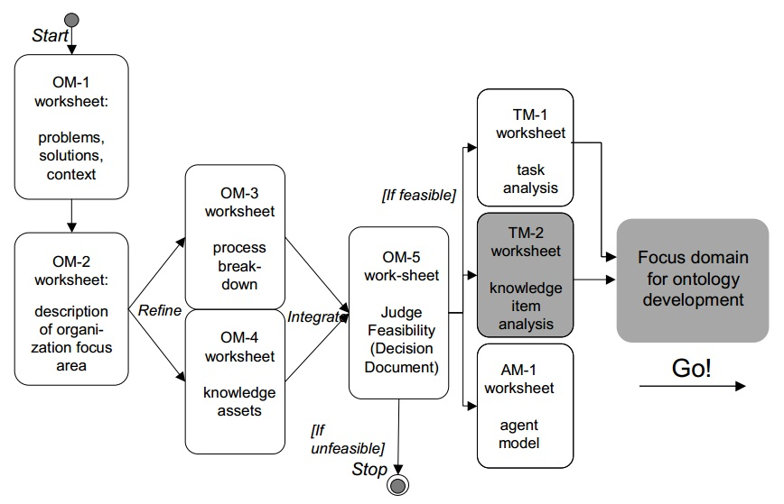
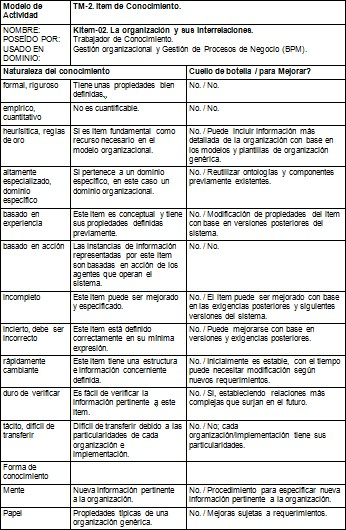
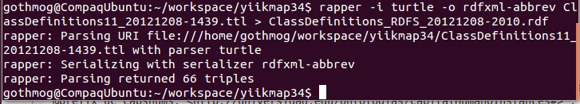
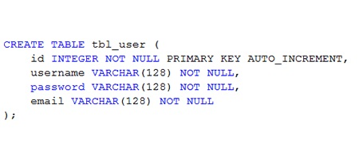

IMPLEMENTACIÓN DE UN MAPA DE CONOCIMIENTO SOBRE PLATAFORMA WEB USANDO ONTOLOGÍAS PARA GESTIÓN DE CONOCIMIENTO ORGANIZACIONAL
Copyright © 2012 Universidad de Caldas (Manizales - Colombia)
Table of Contents
A
- APLICACIÓN WEB
en la ingeniería de software se denomina aplicación web a aquellas herramientas que los usuarios pueden utilizar accediendo a un servidor web a través de Internet o de una intranet mediante un navegador. En otras palabras, es una aplicación software que se codifica en un lenguaje soportado por los navegadores web en la que se confía la ejecución al navegador.
See Also PÁGINA WEB, SITIO WEB.
C
- CÓDIGO ABIERTO
código abierto (o fuente abierta) es el término con el que se conoce al software distribuido y desarrollado libremente. El código abierto tiene un punto de vista más orientado a los beneficios prácticos de poder acceder al código, que a las cuestiones éticas y morales las cuales se destacan en el software libre.
E
- EXTENSIBLE HYPERTEXT MARKUP LANGUAGE
XHTML, Siglas del inglés eXtensible HyperText Markup Language. XHTML es básicamente HTML expresado como XML válido. Es más estricto a nivel técnico, pero esto permite que posteriormente sea más fácil al hacer cambios o buscar errores entre otros. En su versión 1.0, XHTML es solamente la versión XML de HTML, por lo que tiene, básicamente, las mismas funcionalidades, pero cumple las especificaciones, más estrictas, de XML. Su objetivo es avanzar en el proyecto del World Wide Web Consortium de lograr una web semántica, donde la información, y la forma de presentarla estén claramente separadas. La versión 1.1 es similar, pero parte a la especificación en módulos. En sucesivas versiones la W3C planea romper con los tags clásicos traídos de HTML.
See Also EXTENSIBLE MARKUP LANGUAGE, HYPERTEXT MARKUP LANGUAGE, STANDARD GENERALIZED MARKUP LANGUAGE.
- EXTENSIBLE MARKUP LANGUAGE
XML, siglas en inglés de eXtensible Markup Language ('lenguaje de marcas extensible'), es un lenguaje de marcas desarrollado por el World Wide Web Consortium (W3C). Deriva del lenguaje SGML y permite definir la gramática de lenguajes específicos (de la misma manera que HTML es a su vez un lenguaje definido por SGML) para estructurar documentos grandes. A diferencia de otros lenguajes, XML da soporte a bases de datos, siendo útil cuando varias aplicaciones se deben comunicar entre sí o integrar información. (Bases de datos Silberschatz). XML no ha nacido sólo para su aplicación en Internet, sino que se propone como un estándar para el intercambio de información estructurada entre diferentes plataformas. Se puede usar en bases de datos, editores de texto, hojas de cálculo y casi cualquier cosa imaginable. XML es una tecnología sencilla que tiene a su alrededor otras que la complementan y la hacen mucho más grande y con unas posibilidades mucho mayores. Tiene un papel muy importante en la actualidad ya que permite la compatibilidad entre sistemas para compartir la información de una manera segura, fiable y fácil.
See Also EXTENSIBLE HYPERTEXT MARKUP LANGUAGE, HYPERTEXT MARKUP LANGUAGE, STANDARD GENERALIZED MARKUP LANGUAGE.
F
- FRAMEWORK
la palabra inglesa "framework" (marco de trabajo) define, en términos generales, un conjunto estandarizado de conceptos, prácticas y criterios para enfocar un tipo de problemática particular que sirve como referencia, para enfrentar y resolver nuevos problemas de índole similar. En el desarrollo de software, un framework o infraestructura digital, es una estructura conceptual y tecnológica de soporte definido, normalmente con artefactos o módulos de software concretos, con base a la cual otro proyecto de software puede ser más fácilmente organizado y desarrollado. Típicamente, puede incluir soporte de programas, bibliotecas, y un lenguaje interpretado, entre otras herramientas, para así ayudar a desarrollar y unir los diferentes componentes de un proyecto. Representa una arquitectura de software que modela las relaciones generales de las entidades del dominio, y provee una estructura y una especial metodología de trabajo, la cual extiende o utiliza las aplicaciones del dominio.
See Also APLICACIÓN WEB.
G
- GESTIÓN DE CONOCIMIENTO
la gestión del conocimiento (del inglés Knowledge Management) es un concepto aplicado en las organizaciones. Tiene el fin de transferir el conocimiento desde el lugar dónde se genera hasta el lugar en dónde se va a emplear, e implica el desarrollo de las competencias necesarias al interior de las organizaciones para compartirlo y utilizarlo entre sus miembros, así como para valorarlo y asimilarlo si se encuentra en el exterior de estas.
See Also GESTIÓN TECNOLÓGICA DEL CONOCIMIENTO.
- GESTIÓN TECNOLÓGICA DEL CONOCIMIENTO
la Gestión Tecnológica del Conocimiento es el conjunto de procesos y sistemas (computacionales) que permiten a una organización generar ventaja competitiva sostenible en el tiempo, mediante la gestión eficiente de su conocimiento.
See Also GESTIÓN DE CONOCIMIENTO.
H
- HYPERTEXT MARKUP LANGUAGE
HTML, siglas de HyperText Markup Language ("lenguaje de marcado de hipertexto"), hace referencia al lenguaje de marcado predominante para la elaboración de páginas web que se utiliza para describir y traducir la estructura y la información en forma de texto, así como para complementar el texto con objetos tales como imágenes. El HTML se escribe en forma de «etiquetas», rodeadas por corchetes angulares (<,>). HTML también puede describir, hasta un cierto punto, la apariencia de un documento, y puede incluir un script (por ejemplo JavaScript), el cual puede afectar el comportamiento de navegadores web y otros procesadores de HTML.
See Also EXTENSIBLE HYPERTEXT MARKUP LANGUAGE, EXTENSIBLE MARKUP LANGUAGE, STANDARD GENERALIZED MARKUP LANGUAGE.
M
- MAPA DE CONOCIMIENTO
el Mapa de Conocimiento es un recurso organizacional que Gestiona el Conocimiento Organizacional interrelacionando las principales entidades actrices del modelo de conocimiento organizacional. Presta la funcionalidad de directorio que facilita la localización del conocimiento dentro de la organización mediante el desarrollo de guías y listados de personas, o documentos, por áreas de actividad o materias de dominio, que con apoyo de la tecnología son publicados como directorios o gráficos que muestran en dónde se encuentra el conocimiento.
See Also GESTIÓN DE CONOCIMIENTO, GESTIÓN TECNOLÓGICA DEL CONOCIMIENTO.
- MODELO DE CONOCIMIENTO ORGANIZACIONAL
jerarquía de conceptos y clases que describen los recursos organizacionales en un nivel táctico y estratégico de la pirámide de jerarquía organizacional.
See Also MAPA DE CONOCIMIENTO.
O
- ONTOLOGÍA
la ontología es una parte de la metafísica que estudia lo que hay.
See Also WEB SEMÁNTICA.
- ONTOLOGÍA INFORMÁTICA
el término ontología en informática hace referencia a la formulación de un exhaustivo y riguroso esquema conceptual dentro de uno o varios dominios dados; con la finalidad de facilitar la comunicación y el intercambio de información entre diferentes sistemas y entidades. Aunque toma su nombre por analogía, ésta es la diferencia con el punto de vista filosófico de la palabra ontología.
See Also RESOURCE DESCRIPTION FRAMEWORK, WEB ONTOLOGY LANGUAGE, WEB SEMÁNTICA.
P
- PÁGINA WEB
una página web es el nombre de un documento o información electrónica adaptada para la World Wide Web y que puede ser accedida mediante un navegador. Esta información se encuentra generalmente en formato HTML o XHTML, y puede proporcionar navegación a otras páginas web mediante enlaces de hipertexto. Las páginas web frecuentemente incluyen otros recursos como hojas de estilo en cascada, guiones (scripts) e imágenes digitales, entre otros. Las páginas web pueden estar almacenadas en un equipo local o un servidor web remoto. El servidor web puede restringir el acceso únicamente para redes privadas, p. ej., en una intranet corporativa, o puede publicar las páginas en la World Wide Web. El acceso a las páginas web es realizado mediante su transferencia desde servidores utilizando el protocolo de transferencia de hipertexto (HTTP).
See Also APLICACIÓN WEB, SITIO WEB.
R
- RESOURCE DESCRIPTION FRAMEWORK
el Marco de Descripción de Recursos (del inglés Resource Description Framework, RDF) es un framework para metadatos en la World Wide Web (WWW), desarrollado por el World Wide Web Consortium (W3C). Es un lenguaje de objetivo general para representar la información en la web (un metadato data model). Es una descripción conceptual.
See Also RDF SCHEMA, WEB ONTOLOGY LANGUAGE.
- RDF SCHEMA
RDFS o RDF Schema o Esquema RDF es una extensión semántica de RDF. Un lenguaje primitivo de ontologías que proporciona los elementos básicos para la descripción de vocabularios. La primera versión fue publicada en abril de 1998 por la W3C, la versión actual de la recomendación fue publicada en febrero de 2004 también por la W3C. Existen actualmente otros lenguajes de ontologías más potentes, como puede ser OWL.
See Also RESOURCE DESCRIPTION FRAMEWORK, WEB ONTOLOGY LANGUAGE, XML SCHEMA.
S
- SERVICIO WEB
un servicio web (en inglés, Web services) es una tecnología que utiliza un conjunto de protocolos y estándares que sirven para intercambiar datos entre aplicaciones. Distintas aplicaciones de software desarrolladas en lenguajes de programación diferentes, y ejecutadas sobre cualquier plataforma, pueden utilizar los servicios web para intercambiar datos en redes de ordenadores como Internet. La interoperabilidad se consigue mediante la adopción de estándares abiertos. Las organizaciones OASIS y W3C son los comités responsables de la arquitectura y reglamentación de los servicios Web. Para mejorar la interoperabilidad entre distintas implementaciones de servicios Web se ha creado el organismo WS-I, encargado de desarrollar diversos perfiles para definir de manera más exhaustiva estos estándares.Es una maquina que atiende las peticiones de los clientes web y les envía los recursos solicitados.
See Also EXTENSIBLE MARKUP LANGUAGE.
- SERVIDOR WEB
un servidor web o servidor HTTP es un programa informático que procesa una aplicación del lado del servidor realizando conexiones bidireccionales y/o unidireccionales y síncronas o asíncronas con el cliente generando o cediendo una respuesta en cualquier lenguaje o Aplicación del lado del cliente. El código recibido por el cliente suele ser compilado y ejecutado por un navegador web. Para la transmisión de todos estos datos suele utilizarse algún protocolo. Generalmente se utiliza el protocolo HTTP para estas comunicaciones, perteneciente a la capa de aplicación del modelo OSI. El término también se emplea para referirse al ordenador que ejecuta el programa.
See Also PÁGINA WEB, SITIO WEB.
- SISTEMA DE INFORMACIÓN
un sistema de información (SI) es un conjunto de elementos orientados al tratamiento y administración de datos e información, organizados y listos para su uso posterior, generados para cubrir una necesidad u objetivo.
- SITIO WEB
un sitio web es una colección de páginas web relacionadas y comunes a un dominio de Internet o subdominio en la World Wide Web en Internet. Una página web es un documento HTML/XHTML que es accesible generalmente mediante el protocolo HTTP de Internet. Todos los sitios web públicamente accesibles constituyen una gigantesca World Wide Web de información (un gigantesco entramado de recursos de alcance mundial). A las páginas de un sitio web se accede frecuentemente a través de un URL raíz común llamado portada, que normalmente reside en el mismo servidor físico. Los URL organizan las páginas en una jerarquía, aunque los hiperenlaces entre ellas controlan más particularmente cómo el lector percibe la estructura general y cómo el tráfico web fluye entre las diferentes partes de los sitios. Algunos sitios web requieren una subscripción para acceder a algunos o todos sus contenidos. Ejemplos de sitios con subscripción incluyen muchos portales de pornografía en Internet, algunos sitios de noticias, sitios de juegos, foros, servicios de correo electrónico basados en web, sitios que proporcionan datos de bolsa de valores e información económica en tiempo real, etc.
See Also APLICACIÓN WEB, PÁGINA WEB.
- STANDARD GENERALIZED MARKUP LANGUAGE
SGML son las siglas de Standard Generalized Markup Language o "Estándar de Lenguaje de Marcado Generalizado". Consiste en un sistema para la organización y etiquetado de documentos. La Organización Internacional de Estándares (ISO) normalizó este lenguaje ISO 8879:1986, Information processing — Text and office systems — Standard Generalized Markup Language (SGML). El lenguaje SGML sirve para especificar las reglas de etiquetado de documentos y no impone en sí ningún conjunto de etiquetas en especial.
See Also EXTENSIBLE HYPERTEXT MARKUP LANGUAGE, EXTENSIBLE MARKUP LANGUAGE, HYPERTEXT MARKUP LANGUAGE.
T
- TECNOLOGÍAS DE LA INFORMACIÓN Y LA COMUNICACIÓN
las tecnologías de la información y la comunicación (TIC o bien NTIC para nuevas tecnologías de la información y de la comunicación) agrupan los elementos y las técnicas usadas en el tratamiento y la transmisión de la información, principalmente la informática, Internet y las telecomunicaciones.
See Also SISTEMA DE INFORMACIÓN.
W
- WEB ONTOLOGY LANGUAGE
OWL es el acrónimo del inglés Web Ontology Language, un lenguaje de marcado para publicar y compartir datos usando ontologías en la WWW. OWL tiene como objetivo facilitar un modelo de marcado construido sobre RDF y codificado en XML. Tiene como antecedente DAML+OIL, en los cuales se inspiraron los creadores de OWL para crear el lenguaje. Junto al entorno RDF y otros componentes, estas herramientas hacen posible el proyecto de web semántica.
See Also ONTOLOGÍA INFORMÁTICA, RDF SCHEMA, RESOURCE DESCRIPTION FRAMEWORK.
- WEB SEMÁNTICA
la Web semántica (del inglés semantic web) es un conjunto de actividades desarrolladas en el seno de World Wide Web Consortium tendente a la creación de tecnologías para publicar datos legibles por aplicaciones informáticas (máquinas en la terminología de la Web semántica). Se basa en la idea de añadir metadatos semánticos y ontológicos a la World Wide Web. Esas informaciones adicionales —que describen el contenido, el significado y la relación de los datos— se deben proporcionar de manera formal, para que así sea posible evaluarlas automáticamente por máquinas de procesamiento. El objetivo es mejorar Internet ampliando la interoperabilidad entre los sistemas informáticos usando "agentes inteligentes". Agentes inteligentes son programas en las computadoras que buscan información sin operadores humanos.
See Also ONTOLOGÍA INFORMÁTICA, RESOURCE DESCRIPTION FRAMEWORK.
- WORLD WIDE WEB
en informática, la World Wide Web (WWW) o Red informática mundial es un sistema de distribución de información basado en hipertexto o hipermedios enlazados y accesibles a través de Internet. Con un navegador web, un usuario visualiza sitios web compuestos de páginas web que pueden contener texto, imágenes, vídeos u otros contenidos multimedia, y navega a través de ellas usando hiperenlaces.
See Also SERVIDOR WEB, SITIO WEB.
- WORLD WIDE WEB CONSORTIUM
el World Wide Web Consortium, abreviado W3C, es un consorcio internacional que produce recomendaciones para la World Wide Web.
See Also WORLD WIDE WEB.
X
- XML SCHEMA
XML Schema es un lenguaje de esquema utilizado para describir la estructura y las restricciones de los contenidos de los documentos XML de una forma muy precisa, más allá de las normas sintácticas impuestas por el propio lenguaje XML. Se consigue así una percepción del tipo de documento con un nivel alto de abstracción. Fue desarrollado por el World Wide Web Consortium (W3C) y alcanzó el nivel de recomendación en mayo de 2001.
See Also EXTENSIBLE HYPERTEXT MARKUP LANGUAGE, EXTENSIBLE MARKUP LANGUAGE, STANDARD GENERALIZED MARKUP LANGUAGE.
Table of Contents
Este proyecto propone una interpretación de los mapas de conocimiento como una herramienta de apoyo para la gestión del conocimiento, enfocándose principalmente en los mapas que identifican y relacionan recursos y procesos en una organización en la búsqueda de facilitar la transferencia de conocimiento mediante la socialización del mismo entre ellas, mapas éstos sustentados en el primer modo de conversión del modelo de creación de conocimiento de Nonaka. Finalmente, se presenta una propuesta de pasos para la construcción de un S.I. web para modelar mapa de conocimiento usando ontologías para un contexto organizacional.
mapa de conocimiento, gestión del conocimiento, ontología, sistema de información, dominio, contexto, organización, web, mapa, conocimiento, gestión.
El presente documento presenta la “IMPLEMENTACIÓN DE UN MAPA DE CONOCIMIENTO SOBRE PLATAFORMA WEB USANDO ONTOLOGÍAS PARA GESTIÓN DE CONOCIMIENTO ORGANIZACIONAL” como proyecto para solventar las carencias en Gestión de Conocimiento que padecen las organizaciones que pretenden encarar los retos de manejo de información que impone el siglo XXI.
Los Mapas de Conocimiento como herramienta para exposición de datos e información procesada presentando conceptos y relaciones son presentados y usados como la estructura fundamental en la que se fundamenta la plataforma planteada para expresar conocimiento.
Se conjugan dos (2) tecnologías óptimas y de última generación para el contexto del problema, con prestaciones y características claves para el núcleo del problema, así como actuales y eficientes con respecto a la evolución acelerada y exponencial de las TI, como la son: los SI implementados en plataformas con estándares Web, y las ontologías y Web Semántica.
Se incluye un marco teórico sobre el cual se sustenta el SI planteado, los principios y tecnologías que lo soportan, la arquitectura planteada, la pila de componentes y frameworks de trabajo utilizados.
También se presentan las fases de desarrollo del proyecto que incluye la fase de ejecución donde se muestra el proceso de Ingeniería del Software y aplicación de metodologías para la construcción del SI con las características y requerimientos planteados.
Al final se obtienen los resultados y conclusiones de todo el proceso de desarrollo e implementación del proyecto; incluyendo el SI, manuales, documentación, y demás paquetes que componen la entrega de resultados.
Table of Contents
Desde un punto de vista organizacional, una organización utiliza la dirección estratégica para establecer su estrategia y planifica sus acciones mediante la planificación estratégica. De igual forma al analizar las diferentes estructuras organizacionales se observan los variados comportamientos que éstas generan, y la relación entre la dirección y planificación estratégicas y la Ingeniería del Conocimiento.
Se evidencia pues la importancia del conocimiento en la organización. Al fin y al cabo, tal y como lo demuestran las auditorías internas y externas de las organizaciones, lo que hace que una organización sea competitiva es su conjunto de recursos intangibles, es decir, las capacidades ó competencias (se utilizan indistintamente estos dos términos), y habilidades de sus recursos (humanos o artificiales), y el conocimiento que éstas manejan para desarrollarse de forma óptima. De esta forma se introduce el concepto de Capital en una organización; este puede ser de carácter Humano en la forma de Capital Humano, artificial en la forma de Capital Estructural y Recursos Tangibles y organizacional en la forma de Capital Organizacional representado por las interrelaciones entre organizaciones involucradas en la ejecución de procesos.
Dicho de otro modo, la ventaja competitiva de la organización es mayor en cuanto sus capacidades son realmente distintivas y difícilmente imitables. De aquí, la importancia de la Gestión del Conocimiento en la organización, pero primeramente se aclara dicho concepto.
Según (Davenport y Prusak, 1998) la Gestión del Conocimiento es:
“El proceso sistémico de buscar, organizar, filtrar y presentar la información con el objetivo de mejorar la comprensión de las personas en una área específica de interés.”
Según (Malhotra, 2001):
“El proceso organizacional que busca la combinación sinérgica del tratamiento de los datos y la información mediante las capacidades de las Tecnologías de la Información y las Comunicaciones (TIC) y las capacidades de creatividad e innovación de las personas.”
Y según (Sveiby, 2000):
“El arte de crear valor con los activos intangibles de una organización.”
Se observa en estas definiciones los diferentes puntos de vista o focos de interés que se plantean en la Gestión del Conocimiento. Para Davenport es el proceso de gestionar el conocimiento (información que permite alcanzar un objetivo) que le da a la organización una mayor comprensión de su entorno (interno o externo); para Malhotra es el proceso tecnológico que aumenta la creatividad e innovación (fuentes de ventaja competitiva) en la organización; y para Sveiby simplemente es el valor del conocimiento (los activos intangibles) en la organización.
De entre las diversas definiciones de Gestión del Conocimiento, y desde el enfoque de interés aquí, que es el de la Ingeniería del Conocimiento, podemos partir de la definición de (Carrión, 2004):
“El conjunto de procesos y sistemas que permiten que el Capital Intelectual de una organización aumente de forma significativa, mediante la gestión de sus capacidades de resolución de problemas de forma eficiente (en el menor espacio de tiempo posible), con el objetivo final de generar ventajas competitivas sostenibles en el tiempo.”
Pero con la siguiente modificación:
“La Gestión (Tecnológica) del Conocimiento es el conjunto de procesos y sistemas (computacionales) que permiten a una organización generar ventaja competitiva sostenible en el tiempo, mediante la gestión eficiente de su conocimiento”.
Los diferentes objetivos que desea alcanzar la Gestión del Conocimiento son los siguientes:
-
Seleccionar y formular una estrategia de tipo organizacional que permita una adecuada Gestión del Conocimiento.
-
Implantar estrategias orientadas al conocimiento.
-
Promover la mejora continua de los procesos de negocio, principalmente en aquellos que permiten la generación y utilización del conocimiento.
-
Monitorizar y evaluar los beneficios de la Gestión del Conocimiento.
-
Reducir los tiempos y costes relacionados con la mejora continua (productos y procesos).
Según Suresh, la necesidad de aplicar la Gestión de Conocimiento en las organizaciones es la consecuencia de:
-
Una economía y unos requerimientos del mercado orientados a la demanda de los clientes y la competencia internacional.
-
Aumento de la demanda de los clientes de productos que responden de forma más precisa sus necesidades y con una ventaja mayor.
-
Pérdida del conocimiento en la organización debido a un aumento del volumen de ventas del personal.
-
Permite a la organización reutilizar acciones de proyectos anteriores llevados a cabo con éxito.
-
Ayuda a la organización a no repetir errores, y por lo tanto, a reducir el tiempo de respuesta.
De estas definiciones podemos concluir que el conocimiento es “nuestra capacidad de entender (y por lo tanto utilizar para nuestros objetivos) las cualidades y relaciones de las cosas que componen nuestro entorno”.
Una forma de entender el conocimiento es analizando sus diferencias respecto a dato e información.
-
Un dato es un valor discreto que describe un hecho del mundo. Un dato no está estructurado, no dice nada sobre el porqué de las cosas, ni tampoco sobre su posible interpretación o propósito (por ejemplo, el valor 37).
-
A diferencia de los datos, la información sí tiene interpretación y propósito (ya que intervienen el emisor y el receptor en el mensaje), es decir, están representados en un contexto, siendo el conjunto de datos estructurados que sirven para por ejemplo, categorizar, analizar, evaluar, etc., los hechos del mundo que nos rodean (por ejemplo, el valor 37 puede estar representando la temperatura de un paciente).
-
Finalmente, el conocimiento es mucho más amplio que la información, y trata a ésta como instrumento para poder actuar, es decir, es aquella información (adquirida, seleccionada, evaluada, interiorizada, etc.) que nos permite llevar a cabo las acciones para alcanzar nuestros objetivos. Visto de otra manera, el conocimiento es aquella información que ha pasado por un análisis, mediante el cual, dicha información adquiere una relevancia y utilidad para poder actuar y alcanzar nuestros objetivos (por ejemplo, el valor 37 de temperatura puede relacionarse con la categoría “fiebre infecciosa”, y dicha categoría con la acción “medicar antibiótico” para alcanzar el objetivo “curado”).
Podemos representar dichas diferencias entre dato, información y conocimiento en la Figura 1. En ella observamos las distintas fases por las que pasan los datos, transformándose en información (mediante la contextualización), y finalmente en conocimiento (mediante el análisis).
Figura 1. La transformación de datos a información y a conocimiento.
Otra forma de entender el conocimiento es mediante el valor añadido que se va agregando mediante los procesos en torno a la Cadena de Transformación de la Información (ver Figura 2.).
Figura 2. La cadena de transformación de la Información.
Para las organizaciones, el conocimiento se puede definir como la información que posee valor para ella, es decir, aquella información que le permite generar una ventaja competitiva, satisfacer las demandas del mercado o alcanzar las oportunidades a través de la utilización de las competencias distintivas de la organización. Las diferentes categorías de conocimiento para las organizaciones son:
-
Tácito/Explícito: Lo analizaremos en el siguiente apartado, según la accesibilidad del conocimiento.
-
Observable/No Observable: Es el conocimiento que se ve reflejado en los productos o servicios que ofrece la organización.
-
Positivo/Negativo: Es el conocimiento generado por el área de I+D en los procesos Desarrollo de Nuevos Productos o Innovación de los Procesos (según el MGIT) particionado en los descubrimientos (positivo) y las aproximaciones no útiles (negativo).
-
Autónomo/Sistémico: Es el conocimiento que genera valor sin la necesidad de aplicar sensibles modificaciones en la configuración de la organización (autónomo) o el que depende del valor generado por otros componentes de la configuración de la organización (sistémico).
Régimen de Propiedad Intelectual: Es el conocimiento protegido por la Ley de Propiedad Intelectual.
Dados los nuevos retos que encaran las técnicas de Gestión del Conocimiento tradicionales y el gran flujo de información que manejan las organizaciones y empresas del siglo XXI, ¿cómo herramientas como los Mapas de Conocimiento pueden soportar la Gestión del Conocimiento, y estructurar la información existente para convertirla en conocimiento, de modo que los actores de la organización y la organización en sí misma puedan hacer uso útil de los activos y recursos existentes y necesarios?
Las organizaciones del siglo XXI están sujetas a las TI para cumplir sus objetivos, y alcanzar su visión y misión, sin embargo la sola información no es suficiente, menos hablar de los meros datos, de modo que se empieza a tangibilizar la necesidad de conocimiento útil que sea más sugerente y persuasivo para los actores que desempeñan las funciones organizacionales.
La jerarquía organizacional vista en su modelo de pirámide de tres niveles (Marulanda, 2009) está compuesta en la base por un nivel Operativo, en el medio por un nivel Táctico y en la cúspide por un nivel Gerencial; sin embargo las soluciones TI tradicionales solucionan problemas prácticos mayormente del nivel básico Operativo, mientras que el conocimiento holístico que rigen la filosofía y tendencias organizacionales con miras a cumplir los objetivos organizacionales y la visión y misión, y del cual se deben retroalimentar los actores del nivel Gerencial y Táctico para tomar decisiones y avanzar en dirección a las metas organizacionales no es gestionado, ni tratado, ni procesado por los SI típicos de una organización. Esta perspectiva holística del conocimiento intangible de una organización en el mejor de los casos es gestionado por software robusto y anticuado que no corresponde con los avances tecnológicos actuales y que no presenta los recursos como conocimiento dinámico y con interrelaciones, sino como simples activos organizacionales.
El modelo de “La Cadena de Transformación de la Información” (Paniagua, 2007) ha sido usado como un bosquejo que muestra los pasos a seguir para resolver la carencia existente de conocimiento plausible en la Gestión Tecnológica; sin embargo por su propia naturaleza de esquema conceptual no presenta soluciones implementables para llevar a cabo los procesos requeridos para obtener el resultado que pretende el modelo.
Adicionalmente, las TI evolucionan exponencialmente, y la web sigue su crecimiento acelerado en tecnologías avanzadas que incrementan el caudal y complejidad del flujo de información a procesar, y debido a esto una solución que pretenda abordar el problema del conocimiento en la gestión tecnológica deberá corresponder con estos avances técnicos que presenta la informática actual y futura.
La Gestión del Conocimiento (KM) como rama de las Ciencias de la Computación pretende presentar soluciones a las demandas de Conocimiento organizacionales, por lo cual se hace el nicho adecuado para enmarcar una solución alternativa a este problema. Por otro lado, la web como estándar y como tecnología actual se muestra como el camino a seguir; con la adición de usar un enfoque particular para este fin, una herramienta nueva que se acopla a los requerimientos del problema de la Gestión del Conocimiento (KM) como lo es la Web Semántica y en particular las Ontologías.
Sin importar de qué naturaleza sea la organización, institución o entidad, cualquiera deberá gestionar su conocimiento con las técnicas que le permiten sobrevivir y ser competitiva en el mundo, i.e. por medio de las T.I.; sin embargo actualmente el simple uso de T.I. no es suficiente para la supervivencia de una organización, no sólo desde el punto de vista competitivo en el nicho agreste en el que se desenvuelven las organizaciones, sino desde el punto de vista de gestión del conocimiento en el ámbito interno; un nuevo enfoque de la Gestión del Conocimiento debe ser abordado, de modo que las organizaciones sean más productivas, valoren más sus activos intelectuales y puedan sobrevivir al caos de información que presupone estar posicionada en un sector específico del mundo real.
Se trata de que la Gestión del Conocimiento, esa disciplina fundamental aplicada por toda organización, ahora realmente se tratará de gestionar conocimiento, desde el punto de vista cognitivo y útil, tanto por y para humanos, como por y para máquinas. Las T.I. son indispensables en la Gestión del Conocimiento, ahora será indispensable una gestión realmente cognitiva, donde tanto máquinas como humanos puedan hacer uso ágil y útil del conocimiento.
Las herramientas y S.I.'s que Gestionen Conocimiento son un paso necesario para el futuro de las organizaciones; el aporte al entendimiento de este paradigma con las tecnologías subyacentes que lo constituyen es objeto del presente trabajo. Los S.I. orientados a la Gestión del Conocimiento son una nueva clase de S.I.'s que serán el estándar en el futuro próximo de las organizaciones, estos S.I.'s ayudarán a hacer de las organizaciones un lugar más útil como base de conocimientos y del mismo modo, habrá beneficios de estas tendencias, obteniendo mejores resultados en cuanto a valoración de sus activos y optimización de procesos internos. Con las herramientas de Gestión del Conocimiento como lo son los Mapas de Conocimiento las organizaciones sabrán administrar el caos de información en el que se encuentran sumergidas, para emerger en un mundo donde la información es usada de manera sabia. Es en el presente trabajo que compete aportar los conocimientos básicos para incursionar en el mundo de las herramientas de Gestión del Conocimiento mediante la implementación de un Mapa de Conocimiento sobre S.I. Web, de este modo se apreciarán las implicaciones que tiene usar estas herramientas en el mundo real.
Table of Contents
-
IMPLEMENTAR UN MAPA DE CONOCIMIENTO SOBRE PLATAFORMA WEB USANDO ONTOLOGÍAS PARA GESTIÓN DE CONOCIMIENTO ORGANIZACIONAL.
-
Asimilar los activos concernientes mediante la catalogación de estos recursos para saber sobre qué material se va a modelar.
-
Aplicar técnicas de modelamiento a los recursos y el dominio como jerarquías de clases, relaciones y diagramas UML para obtener el modelo de conocimiento del dominio.
-
Definir las ontologías que modelan los conceptos del dominio mediante varios lenguajes para adecuar los recursos a un modelo de conocimiento.
-
Cotejar las ontologías obtenidas observando el nivel de acoplamiento con el modelo de conocimiento para entender las diferencias entre éstas y tener un buen criterio para escoger el lenguaje que más conviene a la implementación del S.I.
-
Elaborar el mapa de conocimiento mediante metodologías típicas para implementar el mismo al S.I.
-
Indagar que herramientas y arquitectura soportan un S.I. orientado a Gestión del Conocimiento buscando y consultando múltiples fuentes para establecer los detalles técnicos de la plataforma de implementación.
-
Diseñar las plantillas y páginas interfaz usando técnicas de diseño web para obtener la interfaz del S.I. que presentará las funcionalidades de gestión del conocimiento y de mapa de conocimiento al usuario.
-
Formular servicios web usando estándares y recomendaciones W3C para ofrecer funcionalidades y servicios útiles para la distribución y acoplamiento de información en el entorno cognitivo que se plantea.
Table of Contents
El Conocimiento es Poder. Hay una máxima que ha estado, está y seguirá estando vigente: “La organización que tiene la mejor información, sabe dónde encontrarla, y puede utilizarla más rápido gana.”. Es un saber común que la organización con la mayor información gana (Daconta et al., 2003). Al dar un vistazo amplio a la definición de Gestión del Conocimiento se ve que “es un concepto aplicado en las organizaciones, que busca transferir el conocimiento y la experiencia existente entre sus miembros, de modo que pueda ser utilizado como un recurso disponible para otros en la organización. Usualmente el proceso implica técnicas para capturar, organizar, almacenar el conocimiento de los trabajadores, para transformarlo en un activo intelectual que preste beneficios y se pueda compartir. En la actualidad, las tecnologías de información permiten contar con herramientas que apoyan la gestión del conocimiento en las empresas, apoyando en la recolección, la transferencia, la seguridad y la administración sistemática de la información, junto con los sistemas diseñados para ayudar a hacer el mejor uso de ese conocimiento. En detalle, se refiere a las herramientas y a las técnicas diseñadas para preservar la disponibilidad de la información llevada a cabo por los individuos dominantes y facilitar la toma de decisiones, así como reducir el riesgo.” (“Gestión del conocimiento”, 2012); la KM (por sus siglas en inglés, Knowledge Management) comprende un rango de estrategias y prácticas usadas en una organización para identificar, crear, representar, distribuir y habilitar la adopción de comprensión y experiencias. Esta comprensión y experiencias comprenden conocimiento, ya sea encarnado en individuos o embebido en procesos o prácticas organizacionales. Los esfuerzos de KM típicamente se concentran en objetivos organizacionales como desempeño mejorado, ventaja competitiva, innovación, compartir lecciones aprendidas, integración y mejoramiento continuo de la organización (“Knowledge management”, 2012), la Gestión del Conocimiento es una disciplina que comprende las herramientas, técnicas y procesos para el manejo más efectivo y eficiente de los activos intelectuales de una organización (Davies et al., 2003).
Es sentido común. ¿Quién no quiere el mejor conocimiento? ¿Quién no quiere buena información? Sin embargo las técnicas tradicionales de Gestión del Conocimiento han encarado nuevos retos debidos al Internet de hoy: sobrecarga de información, la ineficiencia de la búsqueda por palabra clave, la falta de información fehaciente (confiable), y la falta de sistemas computacionales para procesamiento del lenguaje natural. La Web Semántica [y las Ontologías] puede[n] brindar estructura al caos de información (Daconta et al., 2003).
Los sistemas de Gestión del Conocimiento tienen un nicho específico dónde son necesarios como herramienta definitivas para el desempeño de operaciones vitales; especialmente en la gestión estratégica organizacional, campos como la representación del conocimiento, la gestión e intercambio descentralizado de conocimiento e información son algunos en los cuales los sistemas de Gestión del Conocimiento tienen su soporte más importante; son sin embargo los Mapas de Conocimiento una de las herramientas fundamentales sobre las que se enfoca el presente trabajo.
En el marco de la gestión del conocimiento existen actualmente una gran cantidad de estrategias organizacionales, técnicas y herramientas, algunas apoyadas en T.I., que son utilizadas para su implementación, de acuerdo con el contexto sobre el cual se desempeña la organización, pero muchas de estas estrategias y herramientas no son utilizadas solo en la gestión del conocimiento y no todas surgieron en respuesta a ella. Sin embargo, una de las herramientas que surge en respuesta a la gestión del conocimiento, son los mapas de conocimiento.
Es por esto que los mapas de conocimiento son una herramienta de apoyo para la gestión del conocimiento, herramienta que apoya la identificación de recursos y procesos para facilitar la interacción y socialización de conocimiento entre los actores de la organización.
A diferencia de los términos “conocimiento” y “gestión del conocimiento”, parece haber un consenso en la literatura sobre el concepto de “mapa de conocimiento”. Al revisar el término, se evidencian algunas variaciones, pero en esencia apuntan a lo mismo.
De acuerdo con PÉREZ, D. & DRESSLER, M. (2007), los mapas de conocimiento son “directorios que facilitan la localización del conocimiento dentro de la organización mediante el desarrollo de guías y listados de personas, o documentos, por áreas de actividad o materias de dominio”, que con apoyo de la tecnología son publicados como directorios o gráficos que muestran en dónde se encuentra el conocimiento (DAVENPORT, T. & PRUSAK, L.; 1998).
Como complemento a lo anterior, se conciben como representaciones visuales del conocimiento y se convierten en un sitio para encontrar respuestas de una manera más rápida en la organización (UNIVERSIDAD EAFIT; S.F.)
Sin embargo, se debe hacer un llamado de atención a que un mapa de conocimiento en un nivel más estricto, debe surgir generalmente de una auditoría de conocimiento, en la cual se identifica la información y conocimiento central que se necesita y que se usa en una organización, además de brechas, duplicidad y flujos de información y conocimiento y cómo contribuyen al logro de las metas organizacionales (DALKIR, K.; 2005). Desde esta perspectiva, los mapas de conocimiento permiten identificar y representar tanto los conocimientos disponibles en la organización como aquellos que se consideran necesarios para su operación (RIVERO, S.; S.F.).
Adicionalmente, en el contexto de la Ingeniería de Sistemas y de las Ciencias de la Computación, el concepto de Dominio entendido como algún ámbito del mundo acerca del cual deseamos expresar algún conocimiento es fundamental, y lo es con más relevancia en el ámbito de la Ingeniería Ontológica, entendida ésta como la creación de representaciones y la representación de conceptos abstractos y generales usados a su vez para representar conceptos de dominios complejos (Russel y Norvig, 2004).
La Ingeniería Ontológica vista como una, entre otras, de las técnicas de representación del conocimiento (“Representación del conocimiento”, 2009), ésta última una de las áreas más representativas de la Inteligencia Artificial, basa su discurso en el concepto de Ontología. El término Ontología tiene sus raíces en la filosofía griega: “En filosofía, la ontología (del griego οντος, genitivo del participio del verbo εἰμί, ser, estar; y λóγος, ciencia, estudio, teoría) es una parte de la metafísica que estudia lo que hay,1 es decir cuáles entidades existen y cuáles no.” (“Ontología”, 2012); sin embargo en informática tiene una acepción más específica, de modo que el término “hace referencia a la formulación de un exhaustivo y riguroso esquema conceptual dentro de uno o varios dominios dados; con la finalidad de facilitar la comunicación y el intercambio de información entre diferentes sistemas y entidades” (“Ontología –informática-”, 2012). Es decir que se puede entender ontología como una entidad o unidad que organiza todo lo existente en el mundo en una jerarquía de categorías (Russel y Norvig, 2004), o como la unidad que define las palabras y conceptos comunes (el significado) usados para describir y representar un área del conocimiento (Daconta et al., 2003), o como un producto de ingeniería consistente de un vocabulario específico usado para describir [una parte de] la realidad, más un conjunto explícito de asumpciones que tienen que ver con el significado intencionado de ese vocabulario, en otras palabras, la especificación de una conceptualización (Daconta et al., 2003). Es, sin embargo, en el ámbito específico de la naciente Web Semántica dónde el concepto de ontología juega un rol fundamental debido a que entrelaza el entendimiento humano de símbolos con su procesabilidad por máquinas, facilita el compartimiento y re-uso de conocimiento y sobretodo promete un entendimiento compartido y común de un dominio que puede ser comunicado entre personas y sistemas de aplicaciones (Davies et al., 2003).
El término Sistema, “(del latín systema, proveniente del griego σύστημα)”, entendido como “un conjunto de funciones, virtualmente referenciada sobre ejes, bien sean estos reales o abstractos” o como “un conjunto de elementos dinámicamente relacionados formando una actividad para alcanzar un objetivo operando sobre datos, energía y/o materia para proveer información” (“Sistema”, 2010) es un concepto general y amplio que tiene varias categorías y tipos más específicos como lo es el Sistema de Información (S.I.). Un S.I. se entiende como “un conjunto de datos organizados listos y preparados para su posterior uso, generados por una necesidad. Todo interactúa entre sí para procesar los datos y la información (incluyendo procesos manuales y automáticos) y distribuirla de la manera más posible en una determinada organización en función de sus objetivos.” y hay una especialización de éste como lo es el Sistema de Información Informático que es “el campo de estudio de la Tecnologías de la información y la comunicación, este tipo de sistemas son: Un medio implementado tecnológicamente para grabar, almacenar y distribuir expresiones lingüísticas; así como para extraer conclusiones a partir de dichas expresiones.” (“Sistema de información”, 2012). Sin embargo, en este trabajo se usarán indistintamente, como sinónimos, los términos Sistema de Información (S.I.) y Sistema de Información Informático, refiriendo aquel S.I. con base tecnológica e informática; objeto principal éste, del estudio de la Ingeniería de Sistemas y las Ciencias de la Computación, así como del presente trabajo.
Son conceptos como Gestión del Conocimiento, Ontología, Sistema de Información, amparados en otros como Dominio, Ingeniería Ontológica, Web, Semántica y Sistema, los que proporcionan el nicho en el que se asienta el presente trabajo.
Es sabido que “La Web fue creada alrededor de 1989 por el inglés Tim Berners-Lee y el belga Robert Cailliau mientras trabajaban en el CERN en Ginebra, Suiza, y publicado en 1992. Desde entonces, Berners-Lee ha jugado un papel activo guiando el desarrollo de estándares Web (como los lenguajes de marcado con los que se crean las páginas web), y en los últimos años ha abogado por su visión de una Web Semántica.” (“World Wide Web”, 2012), e indagando más profundamente en sus orígenes, se ve que “La idea subyacente de la Web se remonta a la propuesta de Vannevar Bush en los años 40 sobre un sistema similar: a grandes rasgos, un entramado de información distribuida con una interfaz operativa que permitía el acceso tanto a la misma como a otros artículos relevantes determinados por claves. Este proyecto nunca fue materializado, quedando relegado al plano teórico bajo el nombre de Memex. Es en los años 50 cuando Ted Nelson realiza la primera referencia a un sistema de hipertexto, donde la información es enlazada de forma libre. Pero no es hasta 1980, con un soporte operativo tecnológico para la distribución de información en redes informáticas, cuando Tim Berners-Lee propone ENQUIRE al CERN (refiriéndose a Enquire Within Upon Everything, en castellano Preguntando de Todo Sobre Todo), donde se materializa la realización práctica de este concepto de incipientes nociones de la Web. En marzo de 1989, Tim Berners Lee, ya como personal de la divisón DD del CERN, redacta la propuesta,2 que referenciaba a ENQUIRE y describía un sistema de gestión de información más elaborado. No hubo un bautizo oficial o un acuñamiento del término web en esas referencias iniciales utilizándose para tal efecto el término mesh. Sin embargo, el World Wide Web ya había nacido. Con la ayuda de Robert Cailliau, se publicó una propuesta más formal para la world wide web el 12 de noviembre de 1990. […] El gran avance de Berners-Lee fue unir hipertexto e Internet. En su libro Weaving the Web (en castellano, Tejiendo la Red), explica que él había sugerido repetidamente que la unión entre las dos tecnologías era posible para miembros de las dos comunidades tecnológicas, pero como nadie aceptó su invitación, decidió, finalmente, hacer frente al proyecto él mismo.” (“World Wide Web”, 2012).
Tim Berners-Lee es considerado el padre de la web (“Tim Berners-Lee”, 2012), él “intentó desde el principio incluir informacion semántica en su creación, la World Wide Web, pero por diferentes causas no fue posible.2 Por ese motivo introdujo el concepto de semántica con la intención de recuperar dicha omisión.”. Sin embargo como se puede apreciar en la Figura 3, Tim Berners-Lee tiene una visión de dos partes para el futuro de la Web. La primera parte es hacer de la Web un medio más colaborativo. La segunda parte es hacer la Web entendible, y también procesable, por máquinas. La Figura 3 es el diagrama original de Tim Berners-Lee de su visión (Daconta et al., 2003).
Figura 3. Web original propuesta al CERN.
Es claro que la visión original involucraba más que recuperar páginas HTML de los servidores Web. En la figura se aprecian relaciones entre ítems de información como “incluye”, “describe” y “escrito”. Desafortunadamente, estas relaciones entre recursos actualmente no están capturadas en la Web (Daconta et al., 2003).
Durante la evolución de la Web, ha habido ciertas tecnologías que han surgido y evolucionado a la par con la Web, en especial el campo de los lenguajes de marcas ha sido crucial para el desarrollo de la Web. Lenguajes como HTML, XML, XML Schema, RDF, RDFS, OWL han marcado la evolución de la Web. Los Lenguajes de Marcas son sistemas complejos de descripción de información, normalmente documentos, que si se ajustan a SGML, se pueden controlar desde cualquier editor ASCII, entiendo que las Marcas son códigos que indican a un programa cómo debe tratar su contenido (Hernández y Zuluaga, 2008). Por su parte, SGML “son las siglas de Standard Generalized Markup Language o "Lenguaje de Marcado Generalizado". Consiste en un sistema para la organización y etiquetado de documentos. La Organización Internacional de Estándares (ISO) normalizó este lenguaje en 1986. El lenguaje SGML sirve para especificar las reglas de etiquetado de documentos y no impone en sí ningún conjunto de etiquetas en especial. El lenguaje HTML está definido en términos del SGML. XML es un estándar de creación posterior, que incorpora un subconjunto de la funcionalidad del SGML (suficiente para las necesidades comunes), y resulta más sencillo de implementar pues evita algunas características avanzadas de SGML.”, es una tecnología estándar ISO para definir lenguajes de marcas generalizados para documentos y corresponde al ISO 8879:1986 SGML (“SGML”, 2012), los orígenes de SGML se remontan a “un lenguaje inventado por IBM en los años setenta, llamado GML (Generalized Markup Language), que surgió por la necesidad que tenía la empresa de almacenar grandes cantidades de información.”, fue cuando la ISO fijó su atención en él, normalizándolo para crear el estándar (“XML”, 2012).
La Web actual desde su nacimiento hasta el presente ha sido presentada por medio del lenguaje de marcas HTML, “siglas de HyperText Markup Language (Lenguaje de Marcas de Hipertexto), es el lenguaje de marcado predominante para la construcción de páginas web. Es usado para describir la estructura y el contenido en forma de texto, así como para complementar el texto con objetos tales como imágenes.”, al inicio “La primera descripción de HTML disponible públicamente fue un documento llamado HTML Tags (Etiquetas HTML), publicado por primera vez en Internet por Tim Berners-Lee en 1991.1 2 Describe 22 elementos comprendiendo el diseño inicial y relativamente simple de HTML. Trece de estos elementos todavía existen en HTML 4.3 Berners-Lee consideraba a HTML una ampliación de SGML, pero no fue formalmente reconocida como tal hasta la publicación de mediados de 1993, por la IETF, de una primera proposición para una especificación de HTML: el boceto Hypertext Markup Language de Berners-Lee y Dan Connolly, el cual incluía una Definición de Tipo de Documento SGML para definir la gramática.” (“HTML”, 2012).
XML es otro de los lenguajes de marcas que han tenido gran incidencia en la evolución de la Web, son las “siglas en inglés de Extensible Markup Language (lenguaje de marcas extensible), es un metalenguaje extensible de etiquetas desarrollado por el World Wide Web Consortium (W3C). Es una simplificación y adaptación del SGML y permite definir la gramática de lenguajes específicos (de la misma manera que HTML es a su vez un lenguaje definido por SGML). Por lo tanto XML no es realmente un lenguaje en particular, sino una manera de definir lenguajes para diferentes necesidades. Algunos de estos lenguajes que usan XML para su definición son XHTML, SVG, MathML. XML no ha nacido sólo para su aplicación en Internet, sino que se propone como un estándar para el intercambio de información estructurada entre diferentes plataformas. Se puede usar en bases de datos, editores de texto, hojas de cálculo y casi cualquier cosa imaginable. XML es una tecnología sencilla que tiene a su alrededor otras que la complementan y la hacen mucho más grande y con unas posibilidades mucho mayores. Tiene un papel muy importante en la actualidad ya que permite la compatibilidad entre sistemas para compartir la información de una manera segura, fiable y fácil.” (“XML”, 2012). XML no es una nueva tecnología. XML es un subconjunto de SGML que fue inventado en 1969 por el Dr. Charles Goldfarb, Ed Mosher, y Ray Lorie. Así que, los conceptos para XML fueron ideados hace 30 años y continuamente perfeccionados, probados, y ampliamente implementados. En pocas palabras, XML es “SGML para la Web”. XML no es un lenguaje; realmente es un conjunto de reglas sintácticas para crear lenguajes de marcas ricos semánticamente en un dominio particular. En otras palabras, se aplica XML para crear nuevos lenguajes. Cualquier lenguaje creado vía las reglas de XML, como Math Markup Language (MathML), es llamado una aplicación de XML (Daconta et al., 2003). Para 2009, cientos de lenguajes basados en XML han sido desarrollados, incluyendo RSS, Atom, SOAP, y XHTML. Formatos basados en XML se han convertido en la opción predeterminada para más herramientas productivas de oficina, incluyendo Microsoft Office (Office Open XML), OpenOffice.org (OpenDocument), e iWork de Apple (“XML”, 2012). La Figura 4 muestra un esquema del universo de los lenguajes de marca.
Figura 4. Universo de los principales lenguajes de marca.
Otro lenguaje relevante para la construcción de la Web actual es XML Schema, “es un lenguaje de esquema utilizado para describir la estructura y las restricciones de los contenidos de los documentos XML de una forma muy precisa, más allá de las normas sintácticas impuestas por el propio lenguaje XML. Se consigue así una percepción del tipo de documento con un nivel alto de abstracción. Fue desarrollado por el World Wide Web Consortium (W3C) y alcanzó el nivel de recomendación en mayo de 2001.” (“XML_Schema”, 2009). XML Schema en un lenguaje de definición que hace posible restringir documentos XML conformes a un vocabulario específico y una estructura jerárquica específica. XML Schema se volvió una Recomendación W3C (sinónimo con estándar) en Mayo 5, 2001. XML Schema no es el único lenguaje de definición, y se podría oír acerca de otros como Document Type Definitions (DTD's), RELAX NG, y Schematron. Es decir que XML Schema es un lenguaje de definición de marca que define los nombres legales para elementos y atributos, y la estructura jerárquica legal del documento (Daconta et al., 2003).
Si bien HTML ha sido el protagonista desde el nacimiento de la Web, aportando las bases para la construcción de lo que es la Web actualmente, éste sólo logró capturar una parte de la visión de la Web que tuvo su creador; el HTML capturó la esencia de documentos de hipermedia enlazados mundialmente a través de Internet, pero la visión más completa de la Web comprendía una serie de relaciones más complejas entre los recursos accesibles a través de la Web, algo más complejo que el despliegue de documentos y los enlaces entre éstos; la parte referente a la semántica de la Web quedó relegada y con ella el nivel de compenetración humano-máquina y máquina-máquina, y con esto la visión de una Web inteligente donde las máquinas podían entender la información que contenían y donde las máquinas podían procesar el significado de los documentos para entregar información mejor contextualizada y más acertada a los usuarios, quedó pospuesta.
Con la posterior adopción a gran escala de XML, los lenguajes y sintaxis necesarias para completar la información Web con esta meta-data complementaria surgieron, y los esfuerzos por construir una Web Semántica fueron renovados. XML presenta características importantes en el contexto de la meta-data y por consiguiente de la Web Semántica, Daconta et al. (2003) mencionan las siguientes:
-
Usando una sintaxis estándar y abierta, y descripciones completas del significado de los datos, XML es legible y entendible para todo el mundo-no sólo la aplicación y persona que los produce. Este es un apuntalamiento crítico de la Web Semántica, porque no se puede predecir la variedad de agentes software y sistemas que necesitarán consumir datos en la World Wide Web. Un beneficio adicional de guardar datos en XML, más que datos binarios, es que pueden ser buscados tan fácil como páginas Web.
-
El segundo logro clave es que XML provee una sintaxis simple y estandarizada para codificar el significado de valores de datos, o meta data. Una definición usada frecuentemente de meta data es “datos acerca de datos”. Lo importante es que XML estandariza un método simple basado en texto para codificar meta data. En otras palabras, XML provee un mecanismo simple y robusto para codificar información semántica, o el significado de los datos. Es claro que los datos son los valores crudos específicos del contexto y la meta data denota el significado o propósito de dichos valores.
-
El tercer mayor logro de XML es estandarizar una estructura conveniente para expresar información semántica para ambos documentos y campos de datos. La estructura que XML usa es una jerarquía o estructura de árbol. La estructura jerárquica permite al usuario descomponer un concepto en sus partes componentes de una manera recursiva.
-
El último logro de XML es que no es una tecnología nueva. XML es un subconjunto del Standarized Generalized Markup Language (SGML) que fue inventado en 1969 por el Dr. Charles Goldfarb, Ed Mosher, y Ray Lorie. Así que los conceptos para XML fueron ideados hace casi 30 años y continuamente perfeccionados, probados, y ampliamente implementados. En síntesis, XML es “SGML para la Web.”. Así que debería ser claro que XML posee algunas simples valiosas proposiciones que compelen a continuar el manejo de su adopción.
XML tiene muchas de las características que son importantes para la Web Semántica, y es por intermedio de XML que surge RDF, el Resource Description Framework es un lenguaje basado en XML para describir recursos. Mientras que los documentos XML adjuntan meta data a partes de un documento, un uso de RDF es crear meta data acerca del documento como una entidad autosuficiente. En otras palabras, en vez de marcar los aspectos internos de un documento, RDF captura meta data acerca de los aspectos “externos” de un documento, como el autor, la fecha de creación, y tipo (Daconta et al., 2003). RDF es una Recomendación W3C diseñada para estandarizar la definición y uso de descripciones meta-data de recursos basados en Web. Sin embargo, RDF es igualmente bien apropiada para representar datos. RDF usa XML como su sintaxis de serialización. Como con XML, el modelo de datos RDF no provee mecanismos para declarar nombres de propiedades que van a ser usadas (Davies et al., 2003). RDF es un lenguaje basado en XML para describir información contenida en un recurso Web (Yu, 2007).
RDF Schema es un lenguaje en la capa superior de RDF. Si se usan las aserciones basadas en tripletas de RDF para denotar una clase, propiedad de clase, y valor, se pueden crear jerarquías de clase para la clasificación y descripción de objetos. Este es el objetivo de RDF Schema. RDF Schema es un conjunto simple de recursos y propiedades RDF estándar que hacen posible que la gente cree sus propios vocabularios RDF. El modelo de datos expresado por RDF Schema es el mismo modelo de datos usado por lenguajes de programación orientados a objetos como Java. El modelo de datos para RDF Schema permite crear clases de datos. Una clase es definida como un grupo de cosas con características comunes. En POO, una clase es definida como una plantilla o molde para un objeto compuesto de características (también llamadas variables miembro) y comportamientos (también llamados métodos). Un objeto es una instancia de una clase. RDF Schema sólo usa el nombre de la clase y los atributos, ya que es para modelamiento de datos y no programación de comportamientos (Daconta et al., 2003). RDF Schema da un paso adelante para un formalismo de representación más rico e introduce primitivas básicas de modelamiento ontológico en la Web. Con RDFS, se puede hablar de clases, subclases, sub-propiedades, propiedades de restricción de dominio y rango, y mucho más en un contexto basado en Web. A pesar de la similitud en sus nombres, RDFS cumple un rol diferente a XML Schema. XML Schema, y también los DTD’s, prescriben el orden y combinación de etiquetas en un documento XML. En contraste, RDFS sólo provee información acerca de la interpretación de sentencias dadas en un modelo de datos RDF, pero no restringe la apariencia sintáctica de una descripción RDF. RDFS deja a los desarrolladores definir un vocabulario particular para datos RDF y especifica los tipos de objetos a los cuales esos atributos pueden ser aplicados. En otras palabras, el mecanismo RDFS provee un sistema básico de tipos para modelos RDF. Las expresiones RDFS también son expresiones RDF válidas (justo como las expresiones XML Schema son XML válido) (Davies et al., 2003). RDFS está escrito en RDF. RDFS especifica un vocabulario que define clases, subclases, variables miembro de clases, y también las relaciones entre estas clases. La realidad es que este vocabulario siempre estará ausente en el mundo RDF. Como se puede ver, RDF puede ser usado para describir recursos en una forma estructurada que las máquinas puedan procesar; también puede ser usado para establecer relaciones entre estos recursos de modo que las máquinas puedan ser dotadas con capacidades de razonamiento básico. Sin embargo, este no define el vocabulario usado; es decir, RDF no dice nada acerca de clases, subclases y las relaciones que podría existir entre estas clases. El hecho de que este vocabulario siempre este ausente no tendría ninguna implicación. Los documentos RDF pueden todavía ser usados como un conjunto de sentencias autosuficientes. Sin embargo, esta capacidad será muy limitada y nunca puede alcanzar el nivel global que se busca. Para hacer la información distribuida y los datos por Internet más máquina-amigables y máquina-procesables, se necesita dicho vocabulario, y, de otra vez, se tendrá que crear este diccionario. Es así que RDFS es usado para crear dicho vocabulario. Puede ser visto como un lenguaje de descripción de vocabulario RDF. RDFS en conjunto con las sentencias RDF empujarán la Internet un paso adelante hacia la legibilidad de máquinas, y este paso adicional no puede ser logrado sólo por RDF. Para resumir, RDFS es un lenguaje que se puede usar para crear un vocabulario para describir clases, subclases, y propiedades de recursos RDF; es una Recomendación W3C; el lenguaje RDFS también asocia las propiedades con las clases que define; RDFS puede agregar semántica a los predicados y recursos RDF: define el significado de un término dado especificando sus propiedades y qué tipo de objetos pueden ser los valores de estas propiedades. Como se ha mencionado antes, RDFS está escrito en RDF. De hecho, no sólo está escrito en RDF, sino que RDFS también usa el mismo modelo de datos que RDF. En este sentido, RDFS puede ser visto como una extensión de RDF (Yu, 2007).
OWL es el más reciente, más sofisticado y de más alta jerarquía en las capas de la “Pila de la Web Semántica” (ver Figura 3) de los lenguajes de marcas que son relevantes en la evolución de la Web hacia una Web Semántica, “es el acrónimo del inglés Ontology Web Language, un lenguaje de marcado para publicar y compartir datos usando ontologías en la WWW. OWL tiene como objetivo facilitar un modelo de marcado construido sobre RDF y codificado en XML. Tiene como antecedente DAML+OIL, en los cuales se inspiraron los creadores de OWL para crear el lenguaje. Junto al entorno RDF y otros componentes, estas herramientas hacen posible el proyecto de web semántica.” (“OWL”, 2009). Web Ontology Language (a veces referido como Ontology Web Language) es el más expresivo de los lenguajes de ontologías actualmente definidos o que están siendo definidos para la Web Semántica. OWL se originó como un lenguaje patrocinado por el World Wide Web Consortium (W3C). El Web Ontology Working Group del W3C fue formado en Noviembre de 2001, y la primera versión oficial de OWL estuvo disponible en el 2003. OWL tiene tres niveles del lenguaje: OWL Lite, OWL DL (por description logic), y OWL Full. Estos tres niveles están en orden creciente de expresividad. Los niveles más altos del lenguaje contienen los niveles más bajos y también extienden los niveles más bajos (Daconta et al., 2003). OWL es la última recomendación del W3C, y es probablemente el lenguaje más popular para crear ontologías hoy. Está construido sobre RDF Schema.
OWL = RDF Schema + nuevas construcciones para expresividad
Además, todas las clases y propiedades provistas por RDF Schema pueden ser usadas al crear un documento OWL. OWL y RDF Schema tienen el mismo propósito: definir clases, propiedades, y sus relaciones. Sin embargo, comparado a RDF Schema, OWL da la capacidad de expresar relaciones mucho más complicadas y ricas. El resultado final es que se pueden construir agentes o herramientas con la capacidad de raciocinio grandemente aumentada. Además, frecuentemente se querrá usar OWL para el propósito del desarrollo de ontologías; RDF Schema aún es una opción válida, pero sus obvias limitaciones comparado a OWL siempre lo harán una segunda opción (Yu, 2007).
Son esta serie de tecnologías y lenguajes las que sentaron un precedente importante para la evolución de la Web y que constituyen las bases sobre las que se fundamenta la Web Semántica, tal y como se puede apreciar en la llamada “Pila de la Web Semántica” presentada por el W3C y Tim Berners-Lee.
Figura 5. Pila de la web semántica.
RESOURCE DESCRIPTION FRAMEWORK (RDF) (Wikipedia, 2012), es un lenguaje de marcado diseñado para expresar información acerca de recursos web. Por su naturaleza y el concepto de tripletas en que se basa puede usarse para modelar ontologías. Habiendo sido diseñado como un modelo de datos para meta-datos, es usado como una extensión en la web actual para moldear lo que se entiende como web semántica. Siendo un estándar W3C está ampliamente extendido y hay múltiples herramientas concernientes a su uso. RDF como lenguaje para expresar información tiene variedad de aplicaciones, las cuales deben encarar numerosos retos y explorar nuevos terrenos.
RDF es un lenguaje de marcado basado en XML (Wikipedia, 2012), diseñado originalmente como un modelo de datos para meta-datos, con el propósito de expresar información acerca de recursos principalmente en la web, pero que puede ser usado para expresar información acerca de recursos de cualquier tipo o en cualquier contexto.
Algunos hechos y principios que se deben saber acerca de RDF son los siguientes (Yu, 2007; pp. 40):
-
RDF es un lenguaje recomendado por W3C (W3C, 2004), y es acerca de meta-datos.
-
RDF es un estándar para meta-datos.
-
RDF puede describir cualquier recurso independientemente del dominio.
-
RDF provee las bases para codificar, intercambiar, y reusar meta-datos estructurados.
-
RDF es estructurado, esto es, entendible por las máquinas. Las máquinas pueden ejecutar operaciones útiles con el conocimiento expresado en RDF.
-
RDF permite interoperabilidad entre aplicaciones intercambiando información entendible por máquinas en la web.
-
RDF es para la Web Semántica lo que HTML es para la Web.
RDF es en lenguaje de marcado basado en XML, fue concebido como una forma estructurada para modelar meta-datos con el propósito de expresar información acerca de recursos.
La forma en que esta información acerca de los recursos se expresa es mediante el concepto de sentencia ó grafo dirigido etiquetado; en general, tripletas que expresan información acerca de algo.
Una sentencia es de la forma: sujeto - predicado - objeto.
Un grafo es de la forma presentada en la Figura 6.
Figura 6. Forma básica de un grafo dirigido etiquetado.
Ambos son tripletas, donde dos nodos/vértices ó un sujeto y objeto están unidos mediante un arco/arista dirigido y etiquetado ó un predicado.
Es esta estructura en la que se basa la sintaxis de RDF, y por sí misma resulta muy conveniente para modelar complejas estructuras como diagramas de clases, modelos entidad-relación, ontologías y vocabularios, taxonomías, jerarquías, mapas conceptuales, etc. ya que todo este tipo de estructuras se basan en objetos con atributos y relaciones entre ellos. Es esta estructura fundamental de RDF la que permite expresar información acerca de recursos.
RDF logra expresar información de cosas y objetos de manera estructurada y procesable por agentes y computadoras usando unos elementos básicos.
Recurso
Como su nombre lo sugiere, RDF se trata de describir recursos. RDF al ser un estándar para meta-datos, ofrece una forma estandarizada para describir información acerca de algo, este algo puede ser cualquier cosa (un sitio web, una página web, una palabra en una página web, un objeto del mundo real como un libro, un ser humano, un perro), y en el contexto de RDF este algo se denomina recurso. Un recurso es cualquier cosa que pueda ser descrita con expresiones RDF (Yu, 2007; pp. 40).
Figura 7. Ejemplo de tripleta en forma de grafo.
Con la interpretación de RDF como sentencia, el recurso es el sujeto u objeto de la sentencia.
e.g., Organización ejecuta Proceso. Organización y Proceso son recursos.
Con la interpretación de RDF como grafo, los recursos son los nodos/vértices del grafo.
e.g., En la Figura 7., Organización y Proceso son recursos.
Propiedad
Una propiedad es un recurso que tiene un nombre y puede ser usado como propiedad, esto es, una propiedad es usada para describir algún aspecto específico, característica, atributo, o relación de un recurso dado (Yu, 2007; pp. 41).
Con la interpretación de RDF como sentencia, la propiedad es el predicado.
e.g., Organización ejecuta Proceso. ejecuta es la propiedad.
Con la interpretación de RDF como grafo, la propiedad es el arco/arista.
e.g., En la Figura 7., ejecuta es la propiedad.
Sentencia
Una sentencia RDF es usada para describir propiedades de recursos, tiene el siguiente formato:
recurso (sujeto) + propiedad (predicado) + valor de propiedad (objeto).
El valor de la propiedad puede ser una cadena literal o un recurso. Una sentencia indica que un recurso (el sujeto) está enlazado a otro recurso (el objeto) por un arco/arista etiquetado por una relación (el predicado). Se puede interpretar así:
<sujeto> tiene una propiedad <predicado>, cuyo valor es <objeto>. (Yu, 2007; pp. 42).
En la interpretación de RDF como grafo, la sentencia es el conjunto vértice – arco – vértice; e.g., en la Figura 7., la sentencia es todo el conjunto del grafo mostrado, esto, es, el conjunto Organización ejecuta Proceso.
Una ontología en un contexto informático “hace referencia a la formulación de un exhaustivo y riguroso esquema conceptual dentro de uno o varios dominios dados; con la finalidad de facilitar la comunicación y el intercambio de información entre diferentes sistemas y entidades.” (Wikipedia, 2012).
Es decir que se puede entender ontología como una entidad o unidad que organiza todo lo existente en el mundo en una jerarquía de categorías (Russel y Norvig, 2004; pp. 364), o como la unidad que define las palabras y conceptos comunes (el significado) usados para describir y representar un área del conocimiento (Daconta et al., 2003), o como un producto de ingeniería consistente de un vocabulario específico usado para describir [una parte de] la realidad, más un conjunto explícito de asumpciones que tienen que ver con el significado intencionado de ese vocabulario, en otras palabras, la especificación de una conceptualización (Daconta et al., 2003). Yu (2007; pp. 90) explica que una ontología define los términos usados para describir y representar un área de conocimiento, esto es, una ontología tiene un dominio específico y define un grupo de términos en el dominio dado y las relaciones entre ellos.
Importancia de las ontologías
Los siguientes son algunos aspectos relevantes relacionados con las ontologías, así como beneficios que ofrecen:
-
Proveen un entendimiento/definición común y compartida acerca de conceptos claves en el dominio.
-
Proveen una forma de reusar conocimiento del dominio.
-
Hacen las asumpciones del dominio explícitas.
-
Junto con lenguajes de descripción de ontologías (como RDF Schema (RDFS) (W3C, 2004) y Ontology Web Language (OWL) (W3C, 2004)), proveen una forma de codificar conocimiento y semántica que las máquinas pueden entender.
-
Hacen el procesamiento de máquinas automático y en gran escala, posible.
La relación
Como se estableció, las ontologías son una forma ampliamente extendida de representar el conocimiento, esto se hace por medio de conceptos, categorías, jerarquías, propiedades, atributos, relaciones, etc., lo cual se resume en el uso de conceptos/clases y sus atributos/relaciones.
De igual forma, se vio que el concepto fundamental en el diseño y estructura de RDF son las tripletas, sentencias o grafos que establecen una relación/predicado entre dos clases/recursos.
Habiendo clarificado lo anterior, se hace evidente la relación entre RDF y ontologías; el lenguaje RDF puede ser usado para modelar ontologías, dada su capacidad de establecer tripletas.
De hecho existen vocabularios RDF, que son en sí mismos ontologías, con términos específicos para modelar otras ontologías debido a que los términos que modelan son términos genéricos para expresar jerarquía (como clase, sub-clase, recurso, propiedad, cosa) y relaciones (como rango, dominio, restricción, cardinalidad, equivalencia); vocabularios RDF como RDFS (RDF Schema) (W3C, 2004) y OWL (Ontology Web Language) (W3C, 2004) son vocabularios genéricos con términos especializados para modelar ontologías.
Es de aclarar que en el contexto de RDF y web semántica los términos ontología y vocabulario se usan indistintamente, un vocabulario es una ontología, es decir una serie de términos y relaciones específicos de un dominio.
El concepto de web semántica (Wikipedia, 2012) ha co-existido con el concepto de web (Wikipedia, 2012) desde sus inicios, cuando Tim Berners-Lee (Wikipedia, 2012), quien es considerado el creador de la web, presentó su propuesta original (Berners-Lee, 1989), (ver Figura 8.) al CERN (Wikipedia, 2012); son su implementación y uso los que son recientes.
 |
Figura 8. Propuesta original de la Web al CERN.
La web semántica (Wikipedia, 2012) es una extensión de la actual web (Wikipedia, 2012), esto es, información adicional en forma de meta-datos con el fin de dar a la información un significado, para que las máquinas y agentes interpreten esta información extendida y procesar más especializadamente los datos, lo que permitirá un uso mejorado de la información. Consecuentemente habrá mayor sinergia entre maquinas y personas en el trabajo (Yu, 2007; pp. 8), además de una automatización, integración y re-uso de información entre aplicaciones (Yu, 2007; pp. 8).
La relación
Como se estableció, la web semántica es una extensión de la web actual, en la cual se usan meta-datos para expresar información de contexto (ontologías) para los recursos, que es procesable por agentes.
De igual forma, se vio que RDF fue concebido como un estándar para modelar datos, originalmente en la forma de meta-datos.
Habiendo clarificado lo anterior, se hace evidente la relación entre RDF y Web Semántica; el lenguaje RDF es usado para asociar meta-datos contextualizadores en forma de vocabularios, a los recursos web; esto finalmente es lo que provee la semántica (significado) a los recursos, que podrá ser procesada de diversas formas por los agentes.
Como se ha visto, las TI y la web evolucionan exponencialmente, y uno de los hitos destacados en esta evolución de tecnologías fue la introducción de los frameworks, definidos de la siguiente manera:
La palabra inglesa "framework" (marco de trabajo) define, en términos generales, un conjunto estandarizado de conceptos, prácticas y criterios para enfocar un tipo de problemática particular que sirve como referencia, para enfrentar y resolver nuevos problemas de índole similar.
En el desarrollo de software, un framework o infraestructura digital, es una estructura conceptual y tecnológica de soporte definido, normalmente con artefactos o módulos desoftware concretos, con base a la cual otro proyecto de software puede ser más fácilmente organizado y desarrollado. Típicamente, puede incluir soporte de programas,bibliotecas, y un lenguaje interpretado, entre otras herramientas, para así ayudar a desarrollar y unir los diferentes componentes de un proyecto.
Representa una arquitectura de software que modela las relaciones generales de las entidades del dominio, y provee una estructura y una especial metodología de trabajo, la cual extiende o utiliza las aplicaciones del dominio.
Son piezas de ingeniería de software que al tener estructura definida facilitan el desarrollo de tareas comunes y repetitivas, al mismo tiempo que dan una estructura modular y profesional a las aplicaciones desarrolladas con ellos; de este modo el proceso de desarrollo se agiliza, potencia y sofistica dejando vía libre al enfoque en el business core (núcleo de negocio) y a la customizacion (personalización) de los componentes predefinidos, generalmente vistas y demás aspectos visuales para el usuario final.
Un ejemplo en el mundo real y en producción de uno de estos frameworks es Yii. Yii es un framework orientado a objetos, software libre, de alto rendimiento basado en componentes, PHP y framework de aplicaciones web. Yii se pronuncia en español como se escribe y es un acrónimo para "Yes It Is!" (en español: ¡Sí lo es!).
De la página oficial de Yii se tiene la siguiente descripción del framework:
Yii es un framework de desarrollo de aplicaciones web libre y open-source (código abierto) escrito en PHP5 que promueve diseño limpio, DRY y alienta desarrollo rápido. Trabaja para agilizar el desarrollo de aplicaciones y ayuda a asegurar un producto final extremadamente eficiente, extensible y mantenible.
Siendo extremadamente optimizado en rendimiento, Yii es una opción perfecta para proyectos de cualquier tamaño. Sin embargo, ha sido construído con aplicaciones empresariales y sofisticadas en mente. Se tiene control total sobre la configuración de la cabeza a los pies (presentación a persistencia) para ajustarse a las guías de desarrollo empresarial usadas. Viene empaquetado con herramientas para ayudar a probar y depurar las aplicaciones, y tiene documentación clara y completa.
Frameworks de este tipo resultan muy útiles y eficientes para proyectos que tendrán una estructura y aspecto estándar, donde el diseño novedoso no es fundamental, prevalece la funcionalidad sobre el diseño, y los usuarios finales están familiarizados con cierta UI típica.
Y siendo Yii un framework para desarrollo de aplicaciones web open-source que se soporta en tecnologías y arquitectura estándar se hace como un candidato óptimo para su uso en la construcción de aplicaciones web tradicionales con funcionalidades particulares.
Todo software/programa/aplicación requiere de un entorno de ejecución, plataforma, arquitectura, pila de componentes, pila de la aplicación, o stack de componentes; en el caso de las aplicaciones web, el stack de componentes requerido se compone de un S.O. (Linux, Windows, Mac OS X, Unix, etc.) que soporte otras aplicaciones de un nivel un poco más alto como los SGBD (MySQL, PostgreSQL, Oracle, SQL Server, Informix, etc.) y los servidores web (Apache, IIS, nginx, etc.), que a su vez soportan otras aplicaciones y tecnologías de más alto nivel como los lenguajes/aplicaciones CGI (PHP, Perl, ASP.NET, JSP, RoR, etc.), estándares web (HTML, CSS, JS, XML, JSON, etc.) y en general el modelo cliente-servidor.
Diferentes combinaciones y configuraciones del stack de componentes para aplicaciones web puede ser logrado, sin embargo hay ciertas configuraciones que presentan mayor compatibilidad, es decir que presentan un mayor acople, cohesión y facilidad de configuración e interoperabilidad; esto dependerá de los componentes elegidos, su tipo, naturaleza, origen y diseño.
Una configuración de stack de componentes ampliamente usada y con un gran nivel de compatibilidad e interoperabilidad, y por consiguiente fácilmente instalable y configurable es la que usa el servidor web Apache, el SGBD MySQL, y los lenguajes CGI PHP y Perl, corriendo sobre variados S.O.’s; esta configuración de stack de componentes típica es denominada XAMPP, el nombre proviene del acrónimo de X (para cualquiera de los diferentes sistemas operativos), Apache, MySQL, PHP, Perl.
XAMPP es el stack de componentes usado para desarrollar y probar la aplicación web implementación de Mapa de Conocimiento modelado presentada, y por lo tanto es la plataforma/arquitectura/stack recomendado para su instalación y ejecución.
Table of Contents
Se identifican los riesgos pertinentes al S.I. web de la organización en el contexto de la implementación de KM, definiendo las mitigaciones necesarias para permitir el desarrollo del proyecto óptimamente.
La planeación de riesgos, su definición y mitigación, garantiza un producto final sostenible y robusto, que cumpla con la funcionalidad esperada y satisfaga a los usuarios finales.
 |
Tabla III. RIESGO-01.
Tabla IV. RIESGO-02.
 |
Tabla V. RIESGO-03.
 |
Tabla VI. RIESGO-04.
Figura 11. Casos de uso.


Para el diseño y construcción del M.C.O. (Modelo de Conocimiento Organizacional), que es la estructura que representa un Mapa de Conocimiento con las entidades, jerarquías y relaciones de las entidades de la organización, se ha seguido la metodología OTK (On-To-Knowledge) (Davies et al., 2003; pp. 34), representada en la Figura 12.
Figura 12. Pasos de la metodologóa on-to-knowledge (OTK).
A continuación se exponen las diferentes fases de la metodología OTK aplicada.
Como cualquier otro sistema, un sistema de KM sólo funcionará satisfactoriamente si está adecuadamente integrado en la organizacion en la cual va a ser operacional, además son diversos los factores determinantes del éxito o fracaso del sistema, es por esto que el estudio de factibilidad identifica áreas de problemas/oportunidades y soluciones potenciales poniendolas en una perspectiva organizacional amplia, además sirve como soporte de decisión de factibilidad económica, técnica y de proyecto, con el fin de seleccionar el área de enfoque y solución objetivo más adecuadas.
El estudio de factibilidad se ha enfocado en identificar los siguientes tres (3) aspectos referentes a usuarios, casos de uso e interacciones:
Interesados relacionados al proyecto divididos en usuarios del sistema (trabajador de conocimiento) y proveedores del sistema (ingeniero de conocimiento y gestor de conocimiento).
Casos de uso conducidos por usuarios.
Casos de uso conducidos por proveedores del sistema.
Figura 13. Casos de uso de on-to-knowledge.
Para el análisis de usuarios y casos de uso durante el estudio de factibilidad, se ha usado la metodología CommonKADS (ver Figura 14.) con las respectivas adaptaciones/modificaciones; esta metodología ofrece tres (3) modelos para contextualizar y construir el nicho del sistema KM: la organización, la actividad y el agente; y el proceso para construir estos modelos consta de los siguientes pasos generales:
Estudio del alcance y problema, consistente en dos (2) partes:
Identificación de áreas de problema/oportunidad y soluciones potenciales, y ponerlas en una perspectiva organizacional amplia.
Decidir acerca de factibilidad económica, técnica y de proyecto para seleccionar el área de enfoque y solución objetivo más adecuadas.
Estudio de impacto y mejoras, para la solución objetivo seleccionada, también consistente en dos (2) partes:
Recogimiento de datos acerca de las interrelaciones entre actividades de negocio, actores involucrados, y el uso de conocimiento para un desempeño exitoso, y qué mejoras podrían lograrse aquí.
Decidir medidas organizacionales y cambios en actividades, con el fin de asegurar aceptancia organizacional e integración de un sistema KM solución.
|  |
Figura 14. Pasos modificados de CommonKADS.
La metodología CommonKADS para el modelamiento del contexto organizacional identificando actividades, items de conocimiento y agentes usa unas plantillas (Arab y Shariat, 2010) que facilitan esta tarea.
Tabla XII. OM-1. PROBLEMAS, OPORTUNIDADES, CONTEXTO.
 |
Tabla XIII. OM-2. ASPECTOS VARIANTES.
Tabla XVI. OM-3. DESCOMPOSICIÓN DE PROCESO.
Tabla XV. OM-4. ITEMS DE CONOCIMIENTO.
Tabla XVI. OM-5. JUICIO DE FACTIBILIDAD (DOCUMENTO DE DECISIÓN).
Tabla XVII. TM-1, ANÁLISIS DE ACTIVIDAD. TASK-01, CRUD DE PROCESO.
Tabla XVIII. TM-1, ANÁLISIS DE ACTIVIDAD. TASK-02, CRUD DE ORGANIZACIÓN
Tabla XIX. TM-1, ANÁLISIS DE ACTIVIDAD. TASK-03, CRUD DE COMPETENCIA.
Tabla XX. TM-1, ANÁLISIS DE ACTIVIDAD. TASK-04, CRUD DE CAPITAL ESTRUCTURAL.
Tabla XXI. TM-1, ANÁLISIS DE ACTIVIDAD. TASK-05, CRUD DE CAPITAL HUMANO.
Tabla XXII. TM-1, ANÁLISIS DE ACTIVIDAD. TASK-06, CRUD DE CAPITAL RELACIONAL.
Tabla XXIII. TM-1, ANÁLISIS DE ACTIVIDAD. TASK-07, CRUD DE DEMÁS ENTIDADES USADAS PARA LA ALIMENTACIÓN DEL SISTEMA.
Tabla XXIV. TM-2, ITEM DE CONOCIMIENTO. KITEM-01, EL PROCESO Y SUS INTERRELACIONES.
|  |
Tabla XXV. TM-2, ITEM DE CONOCIMIENTO. KITEM-02, LA ORGANIZACIÓN Y SUS INTERRELACIONES.
 |
Tabla XXVI. TM-2, ITEM DE CONOCIMIENTO. KITEM-03, LA COMPETENCIA Y SUS INTERRELACIONES.
Tabla XXVII. TM-2, ITEM DE CONOCIMIENTO. KITEM-04, EL CAPITAL Y SUS INTERRELACIONES.
 |
Tabla XXVIII. TM-2, ITEM DE CONOCIMIENTO. KITEM-05, RECURSOS ESPECÍFICOS DE LA ORGANIZACIÓN.
Tabla XXIX. AM-1, HOJA DE AGENTE. TRABAJADOR DE CONOCIMIENTO.
 |
Tabla XXX. AM-1, HOJA DE AGENTE. INGENIERO DE CONOCIMIENTO.
Tabla XXXI. AM-1, HOJA DE AGENTE. GESTOR DE CONOCIMIENTO.
Con base en el estudio de factibilidad realizado, y dada una decisión de seguir adelante con la implementación del sistema KM, este estudio servirá como entrada para la siguiente fase, Inicio de la Ontología.
Similar al desarrollo de software en general, empezamos con un documento de especificación de requerimientos de ontología (ORSD). En general describe qué debe soportar una ontología, bosquejar el area planeada de aplicación de la ontología y listar, por ejemplo, fuentes valuables de conocimiento. Contiene un conjunto de estructuras relevantes del dominio. El ORSD debería guiar un ingeniero ontológico en decidir acerca de la inclusion y exclusion de conceptos/relaciones y la estructura jerarquica de la ontología.
Tabla XXXII. DOCUMENTO DE ESPECIFICACIÓN DE REQUERIMIENTOS DE ONTOLOGÍA (ORSD).
Tabla XXXIII. PREGUNTAS DE COMPETENCIAS (CQ-1).
El fin de la fase de refinamiento es producir una ontología objetivo madura y orientada a la aplicación acorde con la especificación dada por la fase inicial. Con base en los modelos de organización, actividad y agente analizados con la metodología CommonKADS, se ha bosquejado la jerarquía de conceptos en forma de mapa mental como se muestra en la figura.
Figura 15. Modelo de conocimiento organizacional.
Con la ontología bosquejada se procede a implementarla en lenguaje RDF usando la sintaxis abreviada Turtle y un serializador que posteriormente convierte esta sintaxis a RDF nativo y validable en cualquier validador.
Fragmentos de los documentos Turtle:
Figura 16. Fragmento de código turtle del MCO.
Figura 17. Fragmento de código turtle de la definición de clases.
Usando la herramienta rapper de las Librerías RDF Redland se parsea el documento Turtle para obtener el documento RDF des-serializado nativo como se aprecia.
Figura 18. Herramienta rapper para obtener el documento RDF correspondiente al MCO.
|  |
Figura 19. Herramienta rapper para obtener el documento RDF correspondiente a la definición de clases.
El documento RDF obtenido utiliza términos RDFS y es validable en cualquier validador como se aprecia.
Figura 20. Validación del documento RDF correspondiente al MCO.
Figura 21. Validación del documento RDF correspondiente a la definición de clases.
Verificar el estado, validez y utilidad de la ontología construída implica analizarla en un marco que incluye requerimientos, especificaciones, preguntas de competencias y/o el mundo real. Implica hacer un juicio de las ontologías, el ambiente de software asociado y la documentación con respecto a un marco de referencias; retroalimentación de la fase de refinamiento; y una evaluación sistmatica que conduce a un nivel de calidad consistente de la ontlogía y aceptación en la organización.
La evaluación debe enfocarse en tres (3) aspectos principales:
-
Enfocada en la tecnología: propiedades de las ontologías generadas por las herramientas de desarrollo (conformidad de lenguaje, consistencia, etc.), y propiedades tecnológicas (interoperabilidad, escalabilidad, alojamiento en memoria, etc.).
-
Enfocada en el usuario: conformidad con ORSD (ver Tabla XXXII.), conformidad con preguntas de competencia (ver Tabla XXXIII.), y patrones de uso.
-
Enfocada en la ontología: metodologías formales de evaluación de ontologías.
Al comparar la ontología modelada con el ORSD (ver Tabla XXXII.) se observa que la ontología satisface los lineamientos establecidos en el documento, por otra parte la aplicación basada en la ontología debe soportar o responder las preguntas de competencias analizadas previamente (ver Tabla XXXIII.); con una primera inspección se observa que la ontología modelada está en capacidad de responder estas preguntas, sin embargo es en la etapa posterior de integración con la aplicación final donde realmente se observa esta capacidad.
El mantenimiento y evolución de una aplicación basada en ontología es primariamente un proceso organizacional. Acorde a su rol es el Ingeniero de Conocimiento el actor encargado de modificar la ontología, sin embargo deben programarse los intervalos en que los mantenimientos se harán con su respectiva monitorización, pruebas y análisis de efectos colaterales. De igual forma debe existir una integración entre el equipo de TI encargado de la aplicación basada en la ontología y el equipo de KM.
La aplicación soportando la ontología debe adaptarse a un entorno cambiante, así como la misma ontología debe adaptarse también (evolución de la ontología). Los aspectos a evolucionar son la extensión de la ontología por medio de nuevas entradas léxicas, cambio del significado de las entradas léxicas, o que partes de la ontología se vuelvan obsoloetas (no se necesiten más).
Con base en la jerarquía de conceptos y clases modelada por la ontología, se plantea el siguiente modelo de datos para implementar la BD que refleje los conceptos a los que apunta la ontología.
Debido a la implementación de POO y al enfoque total en el patrón de diseño MVC (Model View Controller), los típicos diagramas UML de clases y flujo de aplicación quedan mejor representados con la estructura estática y flujo del framework con base en los modelos, controladores y vistas generados a partir del modelo de datos y su implementación en la base de datos.
De la página Modelo-Vista-Controlador (Model-View-Controller MVC) de la guía de Yii (http://www.yiiframework.com/doc/guide/1.1/es/basics.mvc) (Yii Framework, 2012) se tiene que Yii implementa el diseño de patron modelo-vista controlador (model-view-controller MVC) el cual es adoptado ampliamente en la programación Web. MVC tiene por objeto separar la lógica del negocio de las consideraciones de la interfaz de usuario para que los desarrolladores puedan modificar cada parte más fácilmente sin afectar a la otra. En MVC el modelo representa la información (los datos) y las reglas del negocio; la vista contiene elementos de la interfaz de usuario como textos, formularios de entrada; y el controlador administra la comunicación entre la vista y el modelo.
Más alla del MVC, Yii tambien introduce un front-controller llamado aplicación el cual representa el contexto de ejecución del procesamiento del pedido. La aplicación resuelve el pedido del usuario y la dispara al controlador apropiado para tratamiento futuro.
El siguiente diagrama muestra la estructura estática de una aplicación Yii.
Figura 23. Estructura estática de aplicación Yii.
El siguiente diagrama muestra un típico flujo de tareas de una aplicación Yii cuando resuelve un pedido de usuario:
Figura 24. Un típico flujo de tareas de una aplicación Yii.
-
Un usuario realiza un pedido con la siguiente URL http://www.example.com/index.php?r=post/show&id=1 y el servidor Web se encarga de la solicitud mediante la ejecución del script de arranque en index.php.
-
El script de entrada crea una instancia de applicación y la ejecuta.
-
La aplicación obtiene la información detallada del pedido del usuario del componente de aplicación request.
-
El controlador determina le controlador y la acción pedido con ayuda del componente de aplicación llamado urlManager. Para este ejemplo el controlador es post que refiere a la clase PostController y la acción es show que su significado es determinado por el controlador.
-
La aplicación crea una instancia del controlador pedido para resolver el pedido del usuario. El controlador determina que la acción show refiere al nombre de método actionShow en la clase controlador. Entonces crea y ejecuta los filtros asociados con esta acción (ejemplo: control de acceso, benchmarking). La acción es ejecutado si los filtros lo permiten.
-
La acción lee el modelo Post cuyo ID es 1 de la base de datos.
-
La acción realiza la vista llamada show con el modelo Post.
-
La vista lee y muestra los atributos del modelo Post.
-
La vista ejecuta algunos widgets.
-
El resultado realizado es embebido en un esquema (layout).
-
La acción completa la vista realizada y se la muestra al usuario.
Es decir que por cada una de las tablas de la BD, este flujo se cumple dependiendo de la entidad en cuestión.
La instalación de Yii Framework se realiza siguiendo los pasos básicos indicados en el sitio http://www.yiiframework.com/tour/, que como se aprecia son los siguientes:
Yii fue diseñado con la construcción de aplicaciones Web en mente. Este es un vistazo al proceso de desarrollo de Yii para crear aplicaciones Web que manejan bases de datos.
Paso 0. Preparación
Figura 25. Esqueleto por defecto de aplicación Yii.
Después de descargar e instalar Yii Framework, ejecutar un simple comando de consola para generar un esqueleto de aplicación Web construída con Yii. La aplicación es totalmente funcional, con buenas características incluyendo login de usuario y formulario de contacto. Es un buen punto de partida para implementar características más sofisticadas.
Paso 1. Crear la Base de Datos
|  |
Figura 26. Ejemplo de sentencia SQL DDL para la creación de tabla de BD.
Aunque Yii puede virtualmente eliminar las tareas de codificación más repetitivas, el desarrollador es responsable por el trabajo creativo real. Esto frecuentemente empieza con el diseño de todo el sistema a construir, en términos de algún esquema de base de datos.
Paso 2a. Yii Genera las Clases Modelo
Figura 27. Generador gii de modelos.
Ahora es el turno de Yii de transformar el esquema de base de datos en código PHP funcional. Usando el generador de código basado en Web proveído, las definiciones de tablas de base de datos se pueden volver clases modelo instantáneamente, sin escribir una sola línea de código. Las clases modelo permitirán acceder la base de datos de una manera orientada a objetos.
Paso 2b. Yii Genera el Código CRUD
Figura 28. Generador gii de código CRUD.
Usando el generador de código mencionado, se puede además generar código que implementa las características CRUD (crear, leer, actualizar, eliminar) típicas para las tablas de base de datos seleccionadas. El código generado es altamente usable y personalizable, siguiendo un bien adoptado patrón de diseño MVC (modelo-vista-controlador). De nuevo, Yii hace todo el trabajo sucio sin necesidad de escribir una sola línea de código.
Paso 3. Personalizar el código según las necesidades
 |
Figura 29. Personalización del código.
Finalmente se necesita personalizar el código según las necesidades exactas.
Para complementar la aplicación web y completar todas las funcionalidades disponibles se han usado algunas librerías, herramientas, software y demás de terceros, a continuación se mencionan las principales.
ARC RDF Classes for PHP
ARC2 es una librería PHP 5.3 para trabajar con RDF. También provee un triple-store basado en MySQL con soporte SPARQL. Es un sistema RDF flexible para practicantes de web semántica y PHP. Es libre, de código abierto, fácil de usar, y corre en la mayoría de entornos de servidor web.
Usada como el triple-store para alimentar la ontología a medida que se introducen o modifican datos de los modelos vía la aplicación web y sus formularios CRUD.
Arbor.js
Arbor es una librería de visualización de grafos construída con web workers y jQuery. Más que tratar de ser un framework que todo lo abarca, arbor provee un algoritmo eficiente de disposición de fuerza dirigida más abstracciones para organización de grafos y manejo de refrescamiento de pantalla.
Usada para la vista de grafo de las tripletas de una entidad de la aplicación web.
Fancybox
Fancybox es una herramienta para desplegar imágenes, html y multimedia en un estilo Mac “lightbox” que flota por encima de la página web.
Usada para mostrar mensajes y vistas emergentes como las diferentes opciones de visualización de una entidad que ofrece la aplicación web.
El control llevado a cabo durante el desarrollo del proyectó consistió en la revisión de los diferentes hitos planeados con el Diagrama de Gantt en conjunción con las reuniones de revisión realizadas.
Habiendo bosquejado una jerarquía de conceptos y clases que describen los recursos organizacionales en un nivel táctico y estratégico de la pirámide de jerarquía organizacional, lo que se ha denominado el MCO (Modelo de Conocimiento Organizacional) , se ha elegido un lenguaje apropiado para representar este conocimiento implementándose una ontología.
Se han elegido las herramientas y arquitectura adecuadas para implementar y soportar la aplicación web basada en la ontología modelada y se ha implementado la aplicación web estándar que soportará la ontología modelada.
La integración de estas dos (2) características en un solo S.I. es lo que da como resultado un Mapa de Conocimiento sobre plataforma web con enfoque en Gestión de Conocimiento Organizacional.
Como hitos o tangibles del proyecto se tienen los siguientes:
-
Paquete para instalación y despliegue de la aplicación web funcional.
-
Manual y documentación técnica.
-
Manual y documentación de usuario.
El complejo flujo de información y el acelerado avance de las T.I. hacen que las organizaciones se releguen ante los actuales y nuevos retos que deben enfrentar, y provoca que disciplinas fundamentales en el éxito organizacional y en el cumpliminiento de visión, misión y objetivos como la Gestión del Conocimiento y la Gestión Tecnológica sean pobremente ejecutadas; además como muestra claramente La Cadena de Transformación de la Información y como expresa la máxima “Conocimiento es Poder”, el conocimiento es y debe ser el activo fundamental, original y propio de una organización y lo que le da su identidad frente a las demás.
De aquí radica la importancia de ejercer una Gestión del Conocimiento que esté acorde con las tecnologías y estándares más avanzados que puedan proveer y suplir las funcionalidades y requerimientos necesarios sin atrasar el avance tecnológico de la organización.
Recurrir a tecnologías y estándares web actuales en conjunto con técnicas de Ingeniería del Conocimiento y Representación del Conocimiento para modelar este dominio de conceptos y clases que conciernen a una organización se presenta como un enfoque adecuado para cubrir las principales necesidades de Gestión de Conocimiento Organizacional con un enfoque de plataforma convencional como es la web.
Davies, Jhon; Fensel, Dieter y Harmelen, Frank V. Towards the Semantic Web. Ontology-Driven Knowledge Management. John Wiley & Sons, Ltd. Inglaterra (2003).
Yu, Liyang. Introduction to the Semantic Web and Semantic Web Services. Taylor & Francis Group, LLC. Boca Raton, Estados Unidos (2007).
Daconta, Michael C.; Obrst, Leo J. y Smith, Kevin T. The Semantic Web. A Guide to the Future of XML, Web Services, and Knowledge Management. Wiley Publishing, Inc. Indianapolis, Estados Unidos (2003).
Russel, Stuart y Norvig, Peter. Inteligencia Artificial. Un enfoque moderno(2a. ed.). PEARSON EDUCACIÓN, S.A. Madrid, España (2004).
Antoniou, Grigoris y van Harmelen, Frank A Semantic Web primer(2a. ed.). The MIT Press. Estados Unidos (2008).
Pollock, Jeffrey T. Semantic Web For Dummies. Wiley Publishing, Inc. Indianápolis (Indiana), Estados Unidos (2009).
Paniagua A., Enrique (coordinador); López A., Belén; et al. La gestión tecnológica del conocimiento. Servicio de Publicaciones. Murcia, España: Universidad de Murcia (2007).
Galvis P., Jair. Mapas de Conocimiento como una herramienta de apoyo para la gestión del conocimiento. Revista InteracTIC, Nro. 09 Año 01. CINTEL (Centro de Investigación de las Telecomunicaciones). (2003).
Rivero, S. (S.F.). Mapas de conocimiento y repositorios de conocimiento estructural. En CARBALLO, R. et. al. (2006). Innovación y gestión del conocimiento modelo, metodología, sistemas y herramientas de innovación. Díaz de Santos. España.
UNIVERSIDAD EAFIT. (S.F.). Mapas del conocimiento: cómo representar el conocimiento. Recuperado de http://atlas.eafit.edu.co:8001/servlet/SBReadResourceServlet?rid=1165431697343_1597434583_818&partName=htmltext, el 19 de julio de 2012.
Pérez, D. & Dressler M. (2007). Tecnologías de la información para la gestión del conocimiento. Recuperado de http://www.intangiblecapital.org/index.php/ic/article/viewFile/12/18, el 19 de julio de 2012.
Arab M., Alireza y Shariat Z., Navid. Design and Development of a Maintenance Knowledge-Base System Based on CommonKADS Methodology. Royal Institute of Technology, School of Industrial Engineering and Management, Department Production Engineering and Management. Estocolmo, Suecia (2010).
Hernández, Sandra M. y Zuluaga, Paula A. (2008). WEB SERVICE. Presentación digital. Manizales, Colombia.
Yii Framework (2012). Modelo-Vista-Controlador (Model-View-Controller MVC). Recuperado en Octubre 15 de 2012, desde http://www.yiiframework.com/doc/guide/1.1/es/basics.mvc
Yii Framework (2012). Take the Tour. Recuperado en Octubre 15 de 2012, desde http://www.yiiframework.com/tour/
Wikipedia (2012). Gestión del conocimiento. Recuperado en Septiembre 26 de 2012, desde http://es.wikipedia.org/wiki/Gesti%C3%B3n_del_conocimiento
Wikipedia (2012). Knowledge management. Recuperado en Septiembre 26 de 2012, desde http://en.wikipedia.org/wiki/Knowledge_management
Wikipedia (2012). Sistema de información. Recuperado en Septiembre 26 de 2012, desde http://es.wikipedia.org/wiki/Sistema_de_informaci%C3%B3n
Wikipedia (2012). Tecnologías de la información y la comunicación. Recuperado en Septiembre 26 de 2012, desde http://es.wikipedia.org/wiki/Tecnolog%C3%ADas_de_la_informaci%C3%B3n_y_la_comunicaci%C3%B3n
Wikipedia (2012). Página web. Recuperado en Septiembre 26 de 2012, desde http://es.wikipedia.org/wiki/P%C3%A1gina_web
Wikipedia (2012). Sitio web. Recuperado en Septiembre 26 de 2012, desde http://es.wikipedia.org/wiki/Sitio_web
Wikipedia (2012). World Wide Web. Recuperado en Septiembre 26 de 2012, desde http://es.wikipedia.org/wiki/World_Wide_Web
Wikipedia (2012). Tim Berners-Lee. Recuperado en Septiembre 26 de 2012, desde http://es.wikipedia.org/wiki/Tim_Berners-Lee
Tim Berners-Lee (1989). Information Management: A Proposal. Recuperado en Septiembre 26 de 2012, desde http://www.w3.org/History/1989/proposal.html
Wikipedia (2012). Organización Europea para la Investigación Nuclear. Recuperado en Septiembre 26 de 2012, desde http://es.wikipedia.org/wiki/CERN
Wikipedia (2012). Web semántica. Recuperado en Julio 17 de 2012, desde http://es.wikipedia.org/wiki/Web_Semántica
Wikipedia (2012). SGML. Recuperado en Septiembre 26 de 2012, desde http://es.wikipedia.org/wiki/SGML
Wikipedia (2012). HTML. Recuperado en Septiembre 26 de 2012, desde http://es.wikipedia.org/wiki/HTML
Wikipedia (2012). Extensible Markup Language. Recuperado en Septiembre 26 de 2012, desde http://es.wikipedia.org/wiki/XML
Wikipedia (2009, 2 de octubre). XML Schema. Recuperado en Julio 17 de 2012, desde http://es.wikipedia.org/wiki/XML_Schema
Wikipedia (2012). XHTML. Recuperado en Julio 17 de 2012, desde http://es.wikipedia.org/wiki/XHTML
Wikipedia (2012). Resource Description Framework. Recuperado en Septiembre 26 de 2012, desde http://es.wikipedia.org/wiki/Resource_Description_Framework
W3C (2004). Resource Description Framework (RDF). Recuperado en Septiembre 26 de 2012, desde http://www.w3.org/RDF/
Wikipedia (2012). RDF Schema. Recuperado en Septiembre 26 de 2012, desde http://es.wikipedia.org/wiki/RDF_Schema
W3C (2004). RDF Vocabulary Description Language 1.0: RDF Schema. Recuperado en Septiembre 26 de 2012, desde http://www.w3.org/TR/rdf-schema/
Wikipedia (2012). Ontología (informática). Recuperado en Septiembre 26 de 2012, desde http://es.wikipedia.org/wiki/Ontolog%C3%ADa_(inform%C3%A1tica)
Wikipedia (2009, 4 de julio). OWL. Recuperado en Julio 17 de 2012, desde http://es.wikipedia.org/wiki/OWL
W3C (2004). OWL Web Ontology Language. Recuperado en Septiembre 26 de 2012, desde http://www.w3.org/TR/owl-ref/